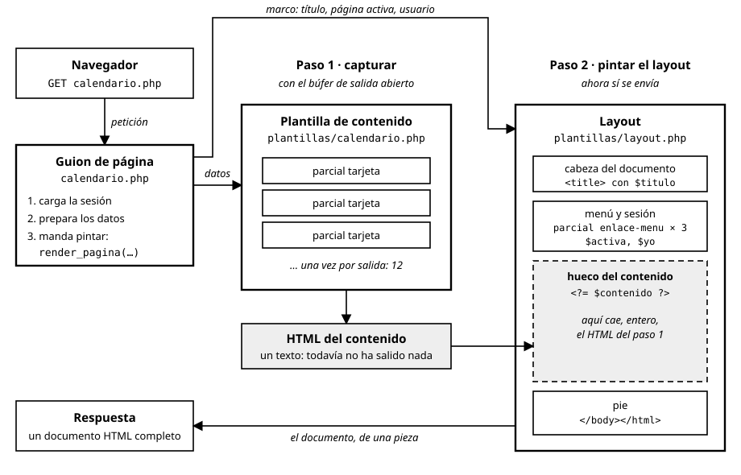
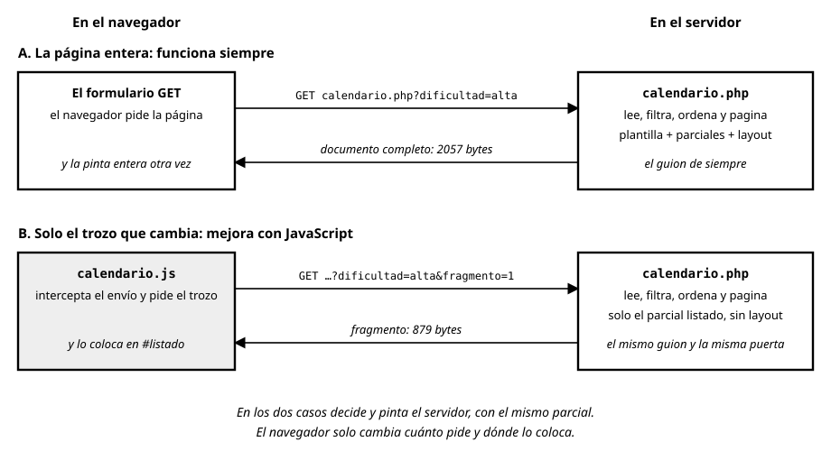

UD4. Generación dinámica con tecnologías y frameworks que añaden código al lenguaje de marcas (plantillas)¶
Módulo 0613 — Desarrollo Web en Entorno Servidor · 2.º DAW · IES Río Arba · Curso 2026-27 · 24 horas · 2.ª evaluación
Vinculación con el resultado de aprendizaje. Esta unidad trabaja completo el RA8 (RD 686/2010 en la redacción dada por el RD 405/2023): "Genera páginas web dinámicas analizando y utilizando tecnologías y frameworks del servidor web que añadan código al lenguaje de marcas". El verbo es genera: páginas completas, con sus formularios y con una estructura que cambia según los datos y según quién mira. La tecnología que utilizas aquí son las plantillas PHP, sin instalar nada: con ellas construyes a mano las piezas que trae cualquier motor de plantillas. Los frameworks y sus motores (Blade, Twig) los identificas y los lees en el apartado 5; usarlos llega con Laravel, al final del curso.
| CE | Qué exige (resumen) | Apartado donde se trabaja |
|---|---|---|
| RA8.a | Identificar las diferencias entre la ejecución de código en el servidor y en el cliente web | Apartados 1 y 8 |
| RA8.b | Reconocer las ventajas de unir ambas tecnologías en el proceso de desarrollo de programas | Apartados 1, 7 y 8 |
| RA8.c | Identificar las tecnologías y frameworks relacionadas con la generación por parte del servidor de páginas web con guiones embebidos | Apartado 5 (y su uso, en los apartados 2 a 4) |
| RA8.d | Utilizar estas tecnologías y frameworks para generar páginas web que incluyan interacción con el usuario | Apartados 6 y 7 |
| RA8.e | Utilizarlas para generar páginas web que incluyan verificación de formularios | Apartado 7 |
| RA8.f | Utilizarlas para generar páginas web que incluyan modificación dinámica de su contenido y su estructura | Apartado 8 (y el 6) |
| RA8.g | Aplicar estas tecnologías y frameworks en la programación de aplicaciones web | Apartados 2, 3, 4 y 9 |
Al terminar esta unidad sabrás: explicar, con una página delante, qué ha hecho el servidor y qué hace el navegador, y qué se gana repartiendo el trabajo entre los dos; separar cada página en un guion que prepara y una plantilla que pinta; escapar todo lo que se imprime sin pensarlo; componer páginas con parciales que reciben datos y con un layout común; reconocer esas mismas piezas en los motores de plantillas de los frameworks; construir listados con filtro, orden y paginación; verificar formularios mostrando cada error junto a su campo; hacer que el contenido y la estructura de una página dependan de los datos y de quién la pide; y juntarlo todo en una aplicación pequeña y ordenada.
Entorno de trabajo de la unidad. El de siempre: PHP instalado, php -l fichero.php antes de ejecutar, el servidor embebido (php -S localhost:8000) y curl con su tarro de cookies. No se instala nada nuevo. Trabaja en la carpeta ud4/ de tu repositorio de la unidad en el aula de código, con tu alias. El caso hilo sigue siendo el Club de Montaña Os Ibones (ficticio), y esta vez no empiezas de cero: partes de la zona privada que construiste en la UD3. Copia a ud4/ estos ficheros tal como quedaron al final de aquella unidad: sesion.php, auth.php, csrf.php, almacen.php, login.php, logout.php, mi-ficha.php, mis-salidas.php y gestion-usuarios.php, y la carpeta datos/ con salidas.php (las doce salidas) y usuarios.php (los ocho usuarios). Si alguno no te quedó completo, están todos en la carpeta ud4/partida/ del repositorio de recursos (enlace en Classroom). Las contraseñas de aula son las de entonces. Cuatro fronteras de alcance: separar la presentación de la lógica es aquí una consecuencia de usar plantillas, pero se evalúa en la UD5 (RA5), donde llegan el enrutador y los controladores; las sesiones, los roles, la redirección tras un POST y el token de los formularios son los de la UD3 y se usan sin volver a explicarlos; el poco JavaScript que aparece se te da escrito, no se evalúa y no hay que modificarlo, porque es territorio del módulo de cliente (0612); y los datos en JSON y las API son de la UD7. Esta unidad empieza la misma semana que el examen de la 1.ª evaluación, que no la incluye: el RA8 entra en el examen de la 2.ª.
Apartado 1. Quién pinta la página: el servidor, el navegador y lo que gana cada uno¶
En la UD1 aprendiste el reparto entre cliente y servidor en una tabla, y en las dos unidades siguientes has escrito solo el lado del servidor. Antes de construir plantillas conviene mirar una misma página desde los dos lados, porque todo lo que viene después sale de ahí: qué decide una plantilla y qué puede hacer el navegador sin preguntar a nadie. El fichero no tiene nada que no sepas escribir desde la UD2: el calendario del club con un filtro por dificultad.
<?php
declare(strict_types=1);
// filtro.php — el calendario del club, filtrado EN EL SERVIDOR con un parámetro GET
$salidas = require __DIR__ . '/datos/salidas.php';
$validas = ['baja', 'media', 'alta'];
$pedida = $_GET['dificultad'] ?? '';
$filtro = in_array($pedida, $validas, true) ? $pedida : 'todas';
?>
<h1>Calendario del club</h1>
<form action="" method="get">
<label>Dificultad
<select name="dificultad">
<option value="">todas</option>
<?php foreach ($validas as $d): ?>
<option value="<?= htmlspecialchars($d) ?>"><?= htmlspecialchars($d) ?></option>
<?php endforeach; ?>
</select>
</label>
<button type="submit">Filtrar</button>
</form>
<p>Filtro aplicado: <?= htmlspecialchars($filtro) ?></p>
<ul>
<?php foreach ($salidas as $s): ?>
<?php if ($filtro === 'todas' || $s['dificultad'] === $filtro): ?>
<li><?= htmlspecialchars($s['nombre']) ?> (<?= htmlspecialchars($s['dificultad']) ?>)</li>
<?php endif; ?>
<?php endforeach; ?>
</ul>
Sírvelo y pídelo con curl filtrando por alta. Esto es todo lo que llega:
$ curl -s "http://localhost:8000/filtro.php?dificultad=alta"
<h1>Calendario del club</h1>
<form action="" method="get">
<label>Dificultad
<select name="dificultad">
<option value="">todas</option>
<option value="baja">baja</option>
<option value="media">media</option>
<option value="alta">alta</option>
</select>
</label>
<button type="submit">Filtrar</button>
</form>
<p>Filtro aplicado: alta</p>
<ul>
<li>Cañón de Añisclo (alta)</li>
<li>Ibones de Anayet (alta)</li>
<li>Moncayo por Agramonte (alta)</li>
<li>Peña Foratata (alta)</li>
</ul>
Lo que se ejecutó en el servidor ya no está. Busca en la respuesta el if que decide qué salidas pasan el filtro:
$ curl -s "http://localhost:8000/filtro.php?dificultad=alta" | grep -c "<?php"
0
$ curl -s "http://localhost:8000/filtro.php?dificultad=alta" | grep -c "<li>"
4
$ curl -s "http://localhost:8000/filtro.php" | grep -c "<li>"
12
Ninguna etiqueta de PHP y cuatro elementos de doce. El fichero se ejecutó entero antes de que saliera el primer byte: recorrió las doce salidas, descartó ocho y escribió cuatro líneas. Al navegador le llega un documento terminado, sin la decisión y sin las ocho salidas que no pasaron. De ahí salen las dos diferencias que ordenan la unidad. El navegador no puede repetir ni deshacer lo que decidió el servidor, porque no tiene ni el código ni los datos. Y el servidor no ve nada de lo que el navegador haga después con la página.
Cada pregunta al servidor es una petición. Cambia el filtro tres veces y mira la terminal donde lanzaste el servidor:
$ curl -s "http://localhost:8000/filtro.php" > /dev/null
$ curl -s "http://localhost:8000/filtro.php?dificultad=alta" > /dev/null
$ curl -s "http://localhost:8000/filtro.php?dificultad=baja" > /dev/null
[Thu Nov 12 19:40:31 2026] 127.0.0.1:39244 [200]: GET /filtro.php
[Thu Nov 12 19:40:31 2026] 127.0.0.1:39252 [200]: GET /filtro.php?dificultad=alta
[Thu Nov 12 19:40:31 2026] 127.0.0.1:39264 [200]: GET /filtro.php?dificultad=baja
Tres cambios, tres peticiones y tres ejecuciones completas del fichero. El desplegable no filtra nada: solo prepara la petición siguiente. Y tampoco limita lo que llega, porque curl no usa desplegables:
$ curl -s "http://localhost:8000/filtro.php?dificultad=marte" | grep "Filtro"
<p>Filtro aplicado: todas</p>
«marte» no está entre las opciones, pero ha llegado al servidor igual; es el in_array de la línea 7 el que lo descarta. Lo que la página ofrece es una propuesta de uso, no una regla.
El mismo filtro, hecho en el navegador. La versión contraria: el servidor envía siempre las doce salidas, cada una con su dificultad en un atributo, y un JavaScript esconde las que no tocan. Los dos ficheros se te dan escritos.
<?php
declare(strict_types=1);
// filtro-cliente.php — el mismo calendario, filtrado EN EL NAVEGADOR: el servidor envía siempre las 12
$salidas = require __DIR__ . '/datos/salidas.php';
?>
<h1>Calendario del club</h1>
<label>Dificultad
<select id="dificultad">
<option value="">todas</option>
<option value="baja">baja</option>
<option value="media">media</option>
<option value="alta">alta</option>
</select>
</label>
<ul>
<?php foreach ($salidas as $s): ?>
<li data-dificultad="<?= htmlspecialchars($s['dificultad']) ?>"><?= htmlspecialchars($s['nombre']) ?> (<?= htmlspecialchars($s['dificultad']) ?>)</li>
<?php endforeach; ?>
</ul>
<script src="filtro.js"></script>
// filtro.js — DADO: no se evalúa ni hay que modificarlo. Se ejecuta en el navegador, no en el servidor.
// Cuando cambia el desplegable, esconde los elementos de la lista que no son de esa dificultad.
const desplegable = document.getElementById('dificultad');
desplegable.addEventListener('change', function () {
for (const elemento of document.querySelectorAll('li[data-dificultad]')) {
// hidden = true esconde el elemento; sigue estando en la página, solo que no se ve
elemento.hidden = desplegable.value !== '' && elemento.dataset.dificultad !== desplegable.value;
}
});
Abre filtro-cliente.php en el navegador con la pestaña Red a la vista y elige «alta»: quedan cuatro salidas en pantalla y no aparece ninguna petición nueva. El filtro es instantáneo porque no pregunta a nadie. Lo que cuesta se ve con curl:
$ curl -s http://localhost:8000/filtro-cliente.php | grep -c "<li"
12
$ curl -s http://localhost:8000/filtro-cliente.php | wc -c
1094
$ curl -s http://localhost:8000/filtro.js | wc -c
604
$ curl -s "http://localhost:8000/filtro.php?dificultad=alta" | wc -c
579
Filtro en el servidor (filtro.php) |
Filtro en el navegador (filtro-cliente.php) |
|
|---|---|---|
| Peticiones al cambiar de filtro | Una cada vez | Ninguna |
Qué viaja para ver las de alta |
4 salidas (579 bytes) | Las 12 (1094 bytes) y el JavaScript (604 bytes) |
| Con JavaScript desactivado | Funciona igual | Se ven las 12: no filtra |
| La dirección guarda el filtro (para un marcador o para enviarla) | Sí: ?dificultad=alta |
No |
| El servidor sabe qué se ha filtrado | Sí | No |
| Las salidas que no se ven | No han viajado | Han viajado: están en el código fuente |
La última fila es la que más errores evita: esconder no es no enviar. Lo que el navegador oculta ha llegado entero y cualquiera puede leerlo. Volverá en el apartado 8, cuando lo que haya que ocultar ya no sea una salida de montaña, sino el panel de administración.
Qué se gana uniendo los dos lados. Ninguna de las dos columnas gana siempre, y por eso el oficio consiste en repartir. El criterio que usaremos toda la unidad: la página funciona primero entera con peticiones, que es lo que garantiza el servidor (datos reales, autoridad, dirección que se puede guardar, sin depender de JavaScript), y después, donde compense, el navegador ahorra alguna. Aplicado a tres necesidades del club:
| Necesidad | Quién la resuelve | Por qué |
|---|---|---|
| Decidir si queda plaza al inscribirse | El servidor, siempre | El dato real solo está allí; lo que enseña el navegador es una foto de cuando se pidió la página |
| Avisar de que falta un campo obligatorio | Los dos | El navegador avisa sin gastar una petición; el servidor lo comprueba igual, porque nada obliga a enviar desde el formulario (apartado 7) |
| Filtrar el calendario | El servidor; el navegador, como mejora | Con doce salidas, enviarlas todas cuesta poco; con dos mil, enviar todas para esconder casi todas no compensa |
La tentación al depurar. Tocar la página en el panel Elementos (borrar un <li>, cambiar un texto) y esperar que el servidor lo sepa; o buscar en el código fuente por qué no se cumple un if. Elementos enseña la copia de la página que tiene el navegador, y la deja modificar; «Ver código fuente» enseña lo que llegó. Al recargar, tus cambios desaparecen: el servidor vuelve a fabricar la página sin haberse enterado de nada. Y un if de PHP se depura donde vive, con var_dump y con la terminal del servidor.
Ejercicios del apartado.
- E1. Sirve
filtro.phpy pídelo concurlde cuatro formas: sin parámetro, con?dificultad=baja, con?dificultad=(vacío) y con?dificultad=BAJA. Para cada una anota el texto de «Filtro aplicado» y cuenta los<li>congrep -c. Explica las dos últimas señalando la línea del código que decide. - E2. Abre
filtro.php?dificultad=altaen el navegador. En el panel Elementos borra un<li>y cambia el texto de otro; compara lo que ves con «Ver código fuente» y después recarga. Explica en tres líneas qué copia de la página enseña cada herramienta, por qué tus cambios se han perdido y por qué el servidor no podía conocerlos. - E3. Con
filtro-cliente.phpabierto y la pestaña Red a la vista, elige «media» y anota cuántas peticiones aparecen; desactiva JavaScript en el navegador, recarga y repite. Después reparte entre servidor y navegador estas tres necesidades del club, en una tabla como la del apartado: ordenar el calendario por fecha, mostrar a cada socio sus inscripciones y avisar de que la contraseña es corta mientras se teclea. Para cada una: quién la resuelve, cuántas peticiones cuesta y qué pasa sin JavaScript.
Apartado 2. Del guion que lo hace todo a la plantilla: preparar, pintar y render()¶
La zona privada del club funciona desde la UD3, pero mírala: la página de los monitores contesta con texto.
<?php
declare(strict_types=1);
// mis-salidas.php — solo monitores y administración
require __DIR__ . '/auth.php';
$yo = requiere_rol('monitor', 'administracion');
$salidas = require __DIR__ . '/datos/salidas.php';
echo 'Salidas a la vista de ', htmlspecialchars($yo['nombre']), ":\n";
foreach ($salidas as $s) {
echo '- ', htmlspecialchars($s['nombre']), ": {$s['inscritos']}/{$s['plazas']} inscritos\n";
}
Vestirla de HTML dentro del mismo fichero es lo que hiciste en registro.php: PHP arriba y marcas abajo. Vale para una página suelta. En una aplicación, ese fichero hace tres trabajos (abrir la puerta, preparar los datos y pintar), y cada retoque de aspecto obliga a tocar el fichero que protege el acceso. Esta unidad separa el tercero. El guion de página abre la puerta y prepara; la plantilla, en otro fichero, pinta lo que le dan.
La tentación: dos ficheros unidos con include. Es lo primero que se le ocurre a cualquiera, y funciona. Para ver qué problema tiene, usa una plantilla que no pinta nada útil: dice qué variables tiene a la vista. get_defined_vars() devuelve todas las variables que existen en ese punto.
<?php declare(strict_types=1); // plantillas/espia.php — plantilla de pruebas: dice qué variables tiene a la vista ?>
<p>Veo: <?= implode(', ', array_keys(get_defined_vars())) ?></p>
<?php
declare(strict_types=1);
// espia-include.php — la tentación: separar en dos ficheros y unirlos con include
require __DIR__ . '/auth.php';
$yo = requiere_rol('monitor', 'administracion');
$salidas = require __DIR__ . '/datos/salidas.php';
include __DIR__ . '/plantillas/espia.php';
Entra como monitora y pídela:
$ curl -s -c monitora.txt -b monitora.txt -d "usuario=elena.pueyo&clave=monitor2026" http://localhost:8000/login.php
$ curl -s -b monitora.txt http://localhost:8000/espia-include.php
<p>Veo: _GET, _POST, _COOKIE, _FILES, yo, salidas, _SERVER, ahora, _SESSION</p>
Nueve variables. Dos son las que querías pasar, yo y salidas. Las otras siete no las ha pasado nadie: las superglobales y $ahora, que es una variable interna de sesion.php. Una plantilla incluida así lo ve todo: hoy $ahora, mañana el array de usuarios con sus hashes. Y al revés: nadie sabe qué necesita esa plantilla sin leerla entera.
Una función es una frontera. Lo aprendiste en el apartado 6 de la UD2: dentro de una función solo existen sus variables. Si el require de la plantilla se ejecuta dentro de una función, la plantilla solo verá lo que haya dentro. Primera versión:
<?php
declare(strict_types=1);
// plantillas.php — primera versión de render()
function render(string $plantilla, array $datos = []): void {
extract($datos); // cada clave del array pasa a ser una variable
require __DIR__ . '/plantillas/' . $plantilla . '.php'; // la plantilla se ejecuta AQUÍ, dentro de la función
}
extract() es nueva: convierte cada clave de un array en una variable con ese nombre, de modo que ['yo' => …] crea $yo. El guion carga plantillas.php, sustituye su include por render('espia', ['yo' => $yo, 'salidas' => $salidas]); y la espía contesta:
Mejor: $ahora ya no está. Pero hay dos variables que tampoco has pasado, plantilla y datos: los parámetros de la propia función. Parece inofensivo hasta que un dato se llama igual. El club elige el diseño de su cartel:
<?php
declare(strict_types=1);
// cartel.php — un dato que se llama igual que una variable interna de render()
require __DIR__ . '/plantillas.php';
render('cartel', ['plantilla' => 'cartel de otoño']);
<?php declare(strict_types=1); // plantillas/cartel.php — recibe: $plantilla (el diseño de cartel que ha elegido el club) ?>
<p>Diseño elegido: <?= htmlspecialchars($plantilla) ?></p>
$ php cartel.php
PHP Warning: require(/ruta/plantillas/cartel de otoño.php): Failed to open stream: No such file or directory in /ruta/plantillas.php on line 7
PHP Fatal error: Uncaught Error: Failed opening required '/ruta/plantillas/cartel de otoño.php' (include_path='.:/usr/share/php') in /ruta/plantillas.php:7
Stack trace:
#0 /ruta/cartel.php(5): render()
#1 {main}
thrown in /ruta/plantillas.php on line 7
El dato plantilla ha pisado a la variable $plantilla de la función antes del require, y render() ha ido a buscar un fichero que se llama como el dato. El remedio habitual es peor, porque no avisa. Cambia la línea por extract($datos, EXTR_SKIP);, que no pisa lo que ya existe, y repite:
El diseño elegido era «cartel de otoño»; la página dice «cartel», que es el nombre de la plantilla. El dato se ha descartado en silencio.
La versión definitiva: que no haya nada que pisar. El arreglo no es buscar nombres raros para los parámetros, sino que la función que hace el require no tenga ninguna variable. Este es el fichero plantillas.php con el que trabajarás toda la unidad (su primera función, e(), se explica enseguida):
<?php
declare(strict_types=1);
// plantillas.php — las herramientas de la unidad: escapar al pintar y renderizar una plantilla con sus datos
/** Escapa un valor para imprimirlo dentro de HTML, sea texto o el valor de un atributo. */
function e(string|int|float|null $valor): string {
return htmlspecialchars((string) $valor);
}
/** Pinta la plantilla plantillas/<nombre>.php, que solo verá las variables de $datos. */
function render(string $plantilla, array $datos = []): void {
incluir_aislado(__DIR__ . '/plantillas/' . $plantilla . '.php', $datos);
}
/** Ejecuta el fichero sin ninguna variable propia a la vista: no tiene parámetros con nombre a propósito. */
function incluir_aislado(): void {
extract(func_get_arg(1)); // segundo argumento: los datos, convertidos en variables
require func_get_arg(0); // primer argumento: la ruta del fichero
}
incluir_aislado() no declara parámetros a propósito. Recibe la ruta y los datos, pero los lee con func_get_arg(n), que devuelve el argumento número n de la llamada sin darle nombre. Dentro no existe ninguna variable hasta que extract crea las de los datos. Las mismas dos pruebas:
$ curl -s -b monitora.txt http://localhost:8000/espia.php
<p>Veo: yo, salidas</p>
$ php cartel.php
<p>Diseño elegido: cartel de otoño</p>
La espía ve exactamente lo que se le pasa, y plantilla vuelve a ser un dato como cualquier otro. Ahora sí es cierta la frase que sostiene la unidad: una plantilla solo recibe lo que su guion le pasa. Queda una excepción que ninguna función puede cerrar: las superglobales ($_GET, $_SESSION…) se alcanzan desde cualquier sitio por diseño, también desde una plantilla, aunque la espía no las liste. Ahí no hay frontera, hay norma: una plantilla no las lee; si necesita algo de ellas, se lo pasa el guion.
Con eso, la página de los monitores queda en dos ficheros:
<?php
declare(strict_types=1);
// mis-salidas.php — guion de página: abre la puerta, prepara los datos y manda pintar
require __DIR__ . '/auth.php';
require __DIR__ . '/plantillas.php';
$yo = requiere_rol('monitor', 'administracion');
$salidas = require __DIR__ . '/datos/salidas.php';
render('mis-salidas', ['yo' => $yo, 'salidas' => $salidas]);
<?php declare(strict_types=1); // plantillas/mis-salidas.php — recibe: $yo, $salidas ?>
<h1>Salidas a la vista de <?= e($yo['nombre']) ?></h1>
<table>
<tr><th>Salida</th><th>Fecha</th><th>Inscritos</th></tr>
<?php foreach ($salidas as $s): ?>
<tr><td><?= e($s['nombre']) ?></td><td><?= e($s['fecha']) ?></td><td><?= e($s['inscritos']) ?> de <?= e($s['plazas']) ?></td></tr>
<?php endforeach; ?>
</table>
$ curl -s -b monitora.txt http://localhost:8000/mis-salidas.php | head -n 6
<h1>Salidas a la vista de Elena Pueyo</h1>
<table>
<tr><th>Salida</th><th>Fecha</th><th>Inscritos</th></tr>
<tr><td>Ibón de Estanés</td><td>2026-10-04</td><td>17 de 20</td></tr>
<tr><td>Peña Oroel</td><td>2026-10-11</td><td>25 de 25</td></tr>
<tr><td>Cañón de Añisclo</td><td>2026-10-18</td><td>9 de 15</td></tr>
$ curl -s -b monitora.txt http://localhost:8000/mis-salidas.php | grep -c "<tr>"
13
Trece filas: la cabecera y las doce salidas. La primera línea de la plantilla lleva, como en la UD2, la directiva de tipos estrictos, y un comentario con lo que recibe: es su contrato, y desde hoy toda plantilla empieza así. La puerta no se ha movido de sitio: sin sesión, el guion redirige antes de llegar a render().
$ curl -s -i http://localhost:8000/mis-salidas.php | grep -E "HTTP|Location"
HTTP/1.1 302 Found
Location: login.php
La página todavía no es un documento HTML completo, sin <html> ni <head>: eso lo pone el layout del apartado 4. Y una pregunta que conviene hacerse ya: plantillas/ está dentro de la carpeta que se sirve, así que cualquiera puede pedir plantillas/mis-salidas.php por su dirección. El servidor la ejecuta sola, sin pasar por la puerta del guion y sin datos; esta se rompe en su primer e(), que nadie ha cargado, pero una plantilla sin datos, como las dos del ejemplo siguiente, sale entera. Que el fallo la tape es casualidad, no protección: en el apartado 9 las plantillas saldrán de la carpeta servida.
El nombre de la plantilla lo escribe siempre el programador. render() monta una ruta con el nombre que recibe. Si ese nombre llega de la petición, quien escribe la URL elige qué fichero se ejecuta. Esta página pinta portada o normas, dos plantillas de dos líneas (un <h1> y un párrafo cada una), según el parámetro p:
<?php
declare(strict_types=1);
// pagina.php — MAL A PROPÓSITO: el nombre de la plantilla llega de la URL
require __DIR__ . '/plantillas.php';
render($_GET['p'] ?? 'portada');
Para verlo, crea fuera de ud4/, en una carpeta privado/ junto a ella, el fichero notas-junta.php con una línea de texto, y pide:
$ curl -s "http://localhost:8000/pagina.php?p=normas"
<h1>Normas de las salidas</h1>
<p>Botas de montaña, agua y frontal en todas las salidas.</p>
$ curl -s -i http://localhost:8000/notas-junta.php | head -n 1
HTTP/1.1 404 Not Found
$ curl -s "http://localhost:8000/pagina.php?p=../../privado/notas-junta"
Notas de la junta: revisar las cuotas pendientes antes de la asamblea.
Por su dirección, el fichero no existe: está fuera de la carpeta que el servidor sirve. Por ?p= sale entero, porque ../../ sube desde plantillas/ hasta fuera de la aplicación y require ejecuta cualquier fichero .php al que llegue la ruta. La regla no tiene matices: a render() se le pasa un nombre escrito en el código, nunca un dato de la petición. Si la URL tiene que elegir página, elige entre nombres que has escrito tú, con el match de la UD2:
<?php
declare(strict_types=1);
// pagina-cerrada.php — la URL elige entre nombres que ha escrito el programador
require __DIR__ . '/plantillas.php';
$plantilla = match ($_GET['p'] ?? 'portada') {
'normas' => 'normas',
default => 'portada',
};
render($plantilla);
$ curl -s "http://localhost:8000/pagina-cerrada.php?p=../../privado/notas-junta"
<h1>Club de Montaña Os Ibones</h1>
<p>Calendario de otoño abierto.</p>
$ curl -s "http://localhost:8000/pagina-cerrada.php?p=normas"
<h1>Normas de las salidas</h1>
<p>Botas de montaña, agua y frontal en todas las salidas.</p>
El ayudante de escape. La regla de la UD2 sigue intacta: todo dato que se imprime pasa por htmlspecialchars. Lo que cambia es que en una plantilla vas a escribirlo cuarenta veces. e() lo deja en una letra y resuelve un tropiezo: htmlspecialchars espera un texto y, con tipos estrictos, un número no pasa.
<?php
declare(strict_types=1);
// tipo.php — htmlspecialchars espera un texto; con tipos estrictos, un entero no pasa
echo htmlspecialchars(25), "\n";
$ php tipo.php
PHP Fatal error: Uncaught TypeError: htmlspecialchars(): Argument #1 ($string) must be of type string, int given in /ruta/tipo.php:4
Stack trace:
#0 /ruta/tipo.php(4): htmlspecialchars()
#1 {main}
thrown in /ruta/tipo.php on line 4
Por eso e() declara string|int|float|null, un tipo unión (vale cualquiera de los cuatro), y convierte a texto antes de escapar: e($s['plazas']) funciona sin pensar. Se imprime en tres sitios y cada uno tiene su trampa. Tres datos con veneno:
<?php
declare(strict_types=1);
// escape-demo.php — tres datos con trampa, pintados en los tres sitios donde se imprime
require __DIR__ . '/plantillas.php';
render('escape-demo', [
'salida' => 'Peña Oroel <b>',
'socia' => 'Ana "la rápida" O\'Hara',
'plazas' => 25,
]);
<?php declare(strict_types=1); // plantillas/escape-demo.php — recibe: $salida, $socia, $plazas ?>
<p>Texto: <?= e($salida) ?>, <?= e($plazas) ?> plazas</p>
<input type="text" name="socia" value="<?= e($socia) ?>">
<a href="ficha.php?salida=<?= e(rawurlencode($salida)) ?>">Ver la ficha</a>
<p>Escapado dos veces: <?= e(e($salida)) ?></p>
$ php escape-demo.php
<p>Texto: Peña Oroel <b>, 25 plazas</p>
<input type="text" name="socia" value="Ana "la rápida" O'Hara">
<a href="ficha.php?salida=Pe%C3%B1a%20Oroel%20%3Cb%3E">Ver la ficha</a>
<p>Escapado dos veces: Peña Oroel &lt;b&gt;</p>
- En el texto,
<b>llega como<b>: se ve, no se obedece. - En un atributo, las comillas del dato llegan como
"y'. Sin eso, la primera comilla cerraría elvaluey el resto del nombre pasaría a ser marcado.e()sirve igual para texto y para atributos, siempre que el atributo vaya entre comillas. - En una URL, el dato pasa primero por
rawurlencode(), que lo convierte a la forma que admite una dirección (%C3%B1es lañ), y después pore(). Para varios parámetros a la vez hay una herramienta mejor, en el apartado 6. - La cuarta línea es el error típico: escapar dos veces. Suele venir de escapar en el guion «para ir seguros» y otra vez en la plantilla, y el visitante acaba leyendo
<b>en la pantalla. Se escapa una vez y al pintar: los datos viajan crudos hasta la plantilla.
Cómo se comprueba que no queda nada sin escapar. Leyendo no basta, porque una impresión se escribe de varias formas. Guarda esta plantilla trampa, con tres impresiones de las que solo la última escapa:
<?php declare(strict_types=1); // plantillas/trampa.php — recibe: $nombre, $x, $y. Plantilla de prueba: tres impresiones, y solo la última escapa ?>
<p><?=$nombre?></p>
<p><?php echo $x ?></p>
<p><?= e($y) ?></p>
La búsqueda va en dos pasos. El primero saca todas las impresiones, se escriban como se escriban:
$ grep -noE '(<\?=|\b(echo|print)\b) *[^ ;?]*' plantillas/trampa.php
2:<?=$nombre
3:echo $x
4:<?= e($y)
-npone delante el número de línea,-omuestra solo el trozo que coincide y-Epermite usar|(esto o aquello) y paréntesis en el patrón.(<\?=|\b(echo|print)\b)son las tres formas de imprimir: la etiqueta corta<?=(la barra quita a?su significado especial) o las palabrasechoyprint.\bmarca el borde de una palabra, para que «hecho» no cuente comoecho.*admite cualquier número de espacios, también ninguno: por eso encuentra<?=$nombre, que no deja espacio.[^ ;?]*recoge lo que viene detrás hasta el primer espacio, punto y coma o interrogación: el principio de lo que se imprime.
El segundo paso recorre la carpeta entera (-r), descarta con -v las impresiones que empiezan llamando a e( y ordena lo que queda con sort:
$ grep -rnoE '(<\?=|\b(echo|print)\b) *[^ ;?]*' plantillas/ | grep -vE '(<\?=|echo|print) *e\(' | sort
plantillas/cartel.php:2:<?= htmlspecialchars($plantilla)
plantillas/espia.php:2:<?= implode(',
plantillas/trampa.php:2:<?=$nombre
plantillas/trampa.php:3:echo $x
Cuatro líneas, y cada una se revisa. Las dos de la trampa son fallos de verdad: la impresión pegada a la etiqueta y la que usa echo. Las otras dos tienen explicación: la espía imprime nombres de variables, no datos, y el cartel escapa con la función original. La tercera impresión de la trampa, la que usa e(), no sale. Borra trampa.php: ya ha hecho su trabajo. La búsqueda es una red, no una demostración: mira cómo empieza cada impresión, así que <?= e($a) . $b ?> se le escapa. Lo que saca se revisa siempre; lo que no saca no queda certificado.
Ejercicios del apartado.
- E4. Convierte
mi-ficha.phpde la UD3 en guion y plantilla. La plantilla recibe solo$yoy pinta el nombre en un<h1>y el rol en un párrafo; su primera línea declara lo que recibe. Evidencias:php -lde los dos ficheros, la respuesta con el tarro de una socia y la redirección sin tarro. - E5. Desde un guion tuyo, pasa a la plantilla espía tres datos llamados
titulo,salidasydatos, y pega lo que ve. Repítelo con la primera versión derender()y explica en dos líneas qué variables sobran en una y por qué en la otra no pueden existir. - E6. Escribe una plantilla que reciba
$busqueday la pinte en un párrafo, en elvaluede un campo de texto y en un enlace afiltro.php?q=…. Pruébala con el datoAñisclo & "Ordesa"y pega el HTML. Después escapa el dato también en el guion, antes de pasarlo, y pega cómo cambia la salida: ¿qué leería el visitante en la pantalla? - E7. Reproduce el experimento de
pagina.phpcon un fichero tuyo fuera de la carpeta servida. Después cierra la página conmatchpara tres plantillas (portada,normasycontacto) y demuestra con cuatro peticiones, las tres válidas y la del fichero de fuera, que solo se pintan esas tres. Borra el fichero de prueba al terminar.
Apartado 3. Parciales con parámetros: la tarjeta de salida¶
El parcial de la UD2 era un trozo fijo: una cabecera que se incluía igual en todas las páginas. El que hace falta en una aplicación recibe datos: la misma tarjeta pinta doce salidas distintas y aparece en dos páginas. Con render() no hay nada nuevo que aprender. Un parcial es una plantilla pequeña, guardada en plantillas/parciales/, a la que se le pasan sus datos como a cualquier otra.
<?php declare(strict_types=1); // plantillas/parciales/tarjeta.php — recibe: $salida; opcional: $con_inscritos ?>
<?php $libres = $salida['plazas'] - $salida['inscritos']; ?>
<li class="tarjeta">
<strong><?= e($salida['nombre']) ?></strong>
<span><?= e($salida['fecha']) ?>, dificultad <?= e($salida['dificultad']) ?></span>
<?php if ($libres <= 0): ?>
<em>COMPLETA</em>
<?php else: ?>
<em><?= e($libres) ?> libres</em>
<?php endif; ?>
<?php if ($con_inscritos ?? false): ?>
<small><?= e($salida['inscritos']) ?> de <?= e($salida['plazas']) ?> inscritos</small>
<?php endif; ?>
</li>
Tres detalles. El comentario dice qué recibe y qué es opcional. $libres es un cálculo de presentación y se hace una sola vez, arriba. Y lo opcional se lee con ??: como la tarjeta solo recibe lo que le pasan, una variable que no le llega sencillamente no existe, y $con_inscritos ?? false le da su valor por defecto.
Un parcial se comprueba solo. Antes de usarlo en una página, píntalo en el terminal desde un guion de prueba, con los datos justos:
<?php
declare(strict_types=1);
// prueba-tarjeta.php — el parcial, solo, con los datos justos: se ejecuta en el terminal
require __DIR__ . '/plantillas.php';
render('parciales/tarjeta', ['salida' => ['nombre' => 'Salida de prueba', 'fecha' => '2026-12-01', 'dificultad' => 'baja', 'plazas' => 10, 'inscritos' => 10]]);
render('parciales/tarjeta', ['salida' => ['nombre' => 'Otra & más', 'fecha' => '2026-12-02', 'dificultad' => 'alta', 'plazas' => 10, 'inscritos' => 4], 'con_inscritos' => true]);
$ php prueba-tarjeta.php
<li class="tarjeta">
<strong>Salida de prueba</strong>
<span>2026-12-01, dificultad baja</span>
<em>COMPLETA</em>
</li>
<li class="tarjeta">
<strong>Otra & más</strong>
<span>2026-12-02, dificultad alta</span>
<em>6 libres</em>
<small>4 de 10 inscritos</small>
</li>
Los dos casos están elegidos para pasar por las dos ramas (completa y con plazas), con lo opcional encendido en uno y con un & en un nombre para ver el escape. Si la tarjeta usara algo que no le pasas, aquí saltaría un Undefined variable.
Ahora las dos páginas. El calendario público es nuevo (el de la UD3, con su botón de inscripción, volverá más adelante ya vestido), y la página de los monitores cambia su tabla por tarjetas:
<?php
declare(strict_types=1);
// calendario.php — guion de la página pública del calendario
require __DIR__ . '/plantillas.php';
$salidas = require __DIR__ . '/datos/salidas.php';
render('calendario', ['salidas' => $salidas]);
<?php declare(strict_types=1); // plantillas/calendario.php — recibe: $salidas ?>
<h1>Calendario de otoño</h1>
<ul>
<?php foreach ($salidas as $s): ?>
<?php render('parciales/tarjeta', ['salida' => $s]); ?>
<?php endforeach; ?>
</ul>
$ curl -s http://localhost:8000/calendario.php | head -n 12
<h1>Calendario de otoño</h1>
<ul>
<li class="tarjeta">
<strong>Ibón de Estanés</strong>
<span>2026-10-04, dificultad media</span>
<em>3 libres</em>
</li>
<li class="tarjeta">
<strong>Peña Oroel</strong>
<span>2026-10-11, dificultad baja</span>
<em>COMPLETA</em>
</li>
$ curl -s http://localhost:8000/calendario.php | grep -c "COMPLETA"
3
<?php declare(strict_types=1); // plantillas/mis-salidas.php — recibe: $yo, $salidas ?>
<h1>Salidas a la vista de <?= e($yo['nombre']) ?></h1>
<ul>
<?php foreach ($salidas as $s): ?>
<?php render('parciales/tarjeta', ['salida' => $s, 'con_inscritos' => true]); ?>
<?php endforeach; ?>
</ul>
$ curl -s -c monitora.txt -b monitora.txt -d "usuario=elena.pueyo&clave=monitor2026" http://localhost:8000/login.php
$ curl -s -b monitora.txt http://localhost:8000/mis-salidas.php | head -n 8
<h1>Salidas a la vista de Elena Pueyo</h1>
<ul>
<li class="tarjeta">
<strong>Ibón de Estanés</strong>
<span>2026-10-04, dificultad media</span>
<em>3 libres</em>
<small>17 de 20 inscritos</small>
</li>
$ curl -s -b monitora.txt http://localhost:8000/mis-salidas.php | grep -c "<small>"
12
$ curl -s http://localhost:8000/calendario.php | grep -c "<small>"
0
Doce líneas de inscritos en la página de los monitores y ninguna en la pública, con una sola plantilla de tarjeta. La prueba de que es una sola: cambia en tarjeta.php la palabra «dificultad» por «nivel» y cuenta en las dos páginas.
$ curl -s http://localhost:8000/calendario.php | grep -c ", nivel "
12
$ curl -s -b monitora.txt http://localhost:8000/mis-salidas.php | grep -c ", nivel "
12
Un cambio, dos páginas. La tentación contraria, copiar el HTML de la tarjeta en las dos plantillas, funciona el primer día y se paga en el primer retoque, cuando una de las dos copias se queda atrás.
Error típico: el parcial que vive de prestado. Con el include de la UD2, un parcial ve las variables de quien lo incluye, y es fácil escribirlo apoyándose en una que «ya estaba ahí»:
<?php declare(strict_types=1); // plantillas/parciales/tarjeta-acoplada.php — MAL A PROPÓSITO: no recibe nada, usa la $s de quien lo incluye ?>
<li><?= e($s['nombre']) ?> (<?= e($s['dificultad']) ?>)</li>
Incluido desde una plantilla cuyo bucle llama $s a cada salida, funciona. Incluido desde otra que la llama $salida, no. Estos son los bucles de las dos plantillas, acoplado-a y acoplado-b, y el guion que pinta una u otra:
<?php foreach ($salidas as $s): ?>
<?php include __DIR__ . '/parciales/tarjeta-acoplada.php'; ?>
<?php endforeach; ?>
<?php foreach ($salidas as $salida): ?>
<?php include __DIR__ . '/parciales/tarjeta-acoplada.php'; ?>
<?php endforeach; ?>
<?php
declare(strict_types=1);
// acoplado.php — el mismo parcial, incluido desde dos plantillas (?p=b pinta la segunda)
require __DIR__ . '/plantillas.php';
$salidas = require __DIR__ . '/datos/salidas.php';
$plantilla = ($_GET['p'] ?? 'a') === 'b' ? 'acoplado-b' : 'acoplado-a';
render($plantilla, ['salidas' => $salidas]);
$ curl -s "http://localhost:8000/acoplado.php" | head -n 4
<ul>
<li>Ibón de Estanés (media)</li>
<li>Peña Oroel (baja)</li>
<li>Cañón de Añisclo (alta)</li>
$ curl -s "http://localhost:8000/acoplado.php?p=b" > /dev/null
En la terminal del servidor, el mismo aviso 24 veces, dos por cada salida:
[Thu Nov 12 19:40:33 2026] PHP Warning: Undefined variable $s in /ruta/plantillas/parciales/tarjeta-acoplada.php on line 2
El parcial funcionaba por casualidad: dependía del nombre que otra plantilla había dado a la variable de su bucle. Con render('parciales/tarjeta', ['salida' => $s]) esa dependencia no puede existir, porque lo que el parcial usa está escrito en la llamada.
Cuando falta una pieza: include avisa y sigue, require se detiene. En la UD2 usaste include para los parciales y require para cargar los datos, sin pararte en la diferencia. En una página compuesta de piezas, la diferencia tiene consecuencias. Dos plantillas idénticas, con-include y con-require, cargan un pie que no existe, una con cada instrucción, y un guion pinta la que se le pida:
<h1>Normas de las salidas</h1>
<?php include __DIR__ . '/parciales/pie.php'; ?>
<p>Botas de montaña, agua y frontal en todas las salidas.</p>
<?php
declare(strict_types=1);
// falta.php — ?con=require usa la plantilla que carga el pie con require; si no, la de include
require __DIR__ . '/plantillas.php';
render(($_GET['con'] ?? '') === 'require' ? 'con-require' : 'con-include');
Lanza el servidor como estará en producción, con los errores ocultos y con la salida acumulada en un búfer antes de enviarla (php -d display_errors=0 -d output_buffering=4096 -S localhost:8000), y pide las dos:
$ curl -s -i "http://localhost:8000/falta.php" | head -n 1
HTTP/1.1 200 OK
$ curl -s "http://localhost:8000/falta.php"
<h1>Normas de las salidas</h1>
<p>Botas de montaña, agua y frontal en todas las salidas.</p>
$ curl -s -i "http://localhost:8000/falta.php?con=require" | head -n 1
HTTP/1.0 500 Internal Server Error
$ curl -s "http://localhost:8000/falta.php?con=require"
<h1>Normas de las salidas</h1>
En la terminal del servidor:
[Thu Nov 12 19:40:35 2026] PHP Warning: include(/ruta/plantillas/parciales/pie.php): Failed to open stream: No such file or directory in /ruta/plantillas/con-include.php on line 3
[Thu Nov 12 19:40:35 2026] PHP Fatal error: Uncaught Error: Failed opening required '/ruta/plantillas/parciales/pie.php' (include_path='.:/usr/share/php') in /ruta/plantillas/con-require.php:3
Con include, el visitante recibe un 200 y una página a la que le falta un trozo sin que nada lo delate: el aviso solo está en el registro del servidor. Con require, la página se corta donde falta la pieza y el código es 500. Que la página siga o se corte no depende de la configuración; el código sí, de dos directivas. Con display_errors=1, como en desarrollo, el mensaje sale dentro de la página y el código es 200 en los dos casos. Y con output_buffering=0, el <h1> ya ha viajado con su 200 cuando llega el fallo: la página se corta igual, pero el código no cambia (el búfer de salida es asunto del apartado 4). Para una pieza sin la que la página no tiene sentido interesa que la página se detenga: un fallo que se ve. Por eso incluir_aislado() usa require, y por eso en esta unidad las plantillas no llaman a include directamente: piden sus parciales con render().
Ejercicios del apartado.
- E8. Escribe el parcial
parciales/aviso.php, que recibe$textoy, opcional,$tipo(okpor defecto, oerror), y pinta un párrafo con la clase correspondiente. Pruébalo solo, desde un guion de terminal, con tres llamadas: sin tipo, conerrory con un texto que lleve un<. Úsalo después encalendarioy enmis-salidas. - E9. Reproduce el parcial que vive de prestado: escribe
tarjeta-acoplada.php, inclúyelo conincludedesde dos plantillas cuyos bucles usen nombres distintos y pega el aviso de la terminal del servidor. Arréglalo sin tocar los bucles y explica por qué el arreglo no depende de cómo se llame la variable en cada plantilla. - E10. Lanza el servidor de tres formas (con
-d display_errors=0 -d output_buffering=4096, con-d display_errors=0 -d output_buffering=0y con-d display_errors=1) y pide en cada una las dos versiones defalta.php. Completa una tabla de seis celdas con el código de estado y lo que ve el visitante, y responde: ¿en cuáles de las seis situaciones nadie se enteraría del fallo mirando solo el código de estado?
Apartado 4. El layout: una estructura para todas las páginas¶
Las páginas del club ya se componen de piezas, pero ninguna es todavía un documento: les falta el <html>, el <head> con su título, el menú y el pie. Todo eso es igual en todas, y lo que es igual en todas se escribe una sola vez. Esa pieza se llama layout: el documento completo, con un hueco donde cada página pone lo suyo.
La tentación: partir el documento en dos mitades. Con lo que sabes, lo inmediato es hacer dos parciales, una cabecera que abre el documento y un pie que lo cierra, y que cada plantilla los pida al empezar y al terminar:
<?php declare(strict_types=1); // plantillas/parciales/cabecera.php — recibe: $titulo. Abre el documento… y lo deja abierto ?>
<!doctype html>
<html lang="es">
<head>
<meta charset="utf-8">
<title><?= e($titulo) ?> · Club de Montaña Os Ibones</title>
</head>
<body>
<main>
<?php declare(strict_types=1); // plantillas/parciales/pie.php — no recibe datos. Cierra lo que abrió la cabecera ?>
</main>
<footer>
<p>Club de Montaña Os Ibones · Temporada de otoño</p>
</footer>
</body>
</html>
<?php declare(strict_types=1); // plantillas/normas.php — no recibe datos ?>
<?php render('parciales/cabecera', ['titulo' => 'Normas']); ?>
<h1>Normas de las salidas</h1>
<p>Botas de montaña, agua y frontal en todas las salidas.</p>
<?php render('parciales/pie'); ?>
Funciona. Ahora llega una segunda página, y a quien la escribe se le olvida la última línea:
<?php declare(strict_types=1); // plantillas/contacto.php — no recibe datos ?>
<?php render('parciales/cabecera', ['titulo' => 'Contacto']); ?>
<h1>Contacto</h1>
<p>Escribe a club@example.org o pásate los jueves por el local.</p>
Un guion mitades.php pinta una u otra según el parámetro p, con el match del apartado 2. Pide las dos y cuenta los cierres del documento:
$ curl -s -i "http://localhost:8000/mitades.php?p=contacto" | head -n 1
HTTP/1.1 200 OK
$ curl -s "http://localhost:8000/mitades.php?p=normas" | grep -c "</html>"
1
$ curl -s "http://localhost:8000/mitades.php?p=contacto" | grep -c "</html>"
0
La página de contacto contesta 200 y no cierra ni el <main>, ni el <body>, ni el <html>. Nadie avisa: no hay código de error ni un solo aviso en la terminal del servidor, porque para PHP no ha fallado nada. Ha pintado lo que se le pidió. El defecto es de diseño: ningún fichero contiene el documento entero. Las etiquetas se abren en un fichero y se cierran en otro, y que el resultado sea correcto depende de que cada plantilla se acuerde de las dos mitades. De aquí sale una norma que vale para toda la unidad: una plantilla cierra todo lo que abre.
Darle la vuelta: un documento con un hueco. Lo que hace falta es un solo fichero con el documento completo y, en medio, el contenido de cada página. Para ponerlo «en medio» hay que tener ese contenido guardado en una variable, y render() no devuelve nada: imprime. Falta una herramienta.
El búfer de salida. ob_start() le dice a PHP que deje de enviar lo que se imprime y lo vaya guardando. ob_get_clean() devuelve lo guardado como texto, lo vacía y cierra el búfer.
<?php
declare(strict_types=1);
// bufer.php — el búfer de salida: lo que se imprime se guarda en vez de enviarse
ob_start(); // desde aquí, nada sale: se acumula
echo "segundo\n";
$guardado = ob_get_clean(); // devuelve lo acumulado, lo vacía y cierra el búfer
echo "primero\n";
echo $guardado;
echo strlen($guardado), " bytes guardados\n";
«segundo» se imprimió antes y salió después: estuvo guardado en $guardado hasta que el guion quiso. Con esa herramienta, plantillas.php gana dos funciones. render() no cambia, así que todas las llamadas de los apartados 2 y 3 siguen valiendo:
/** Devuelve como texto lo que la plantilla habría enviado: la pinta con un búfer de salida abierto. */
function capturar(string $plantilla, array $datos = []): string {
ob_start(); // desde aquí, lo que se imprime se guarda
render($plantilla, $datos);
return ob_get_clean(); // lo guardado, como texto; el búfer queda cerrado
}
/** Pinta una página entera: la plantilla, ya capturada, dentro del layout. $marco lleva lo que pide el layout. */
function render_pagina(string $plantilla, array $datos, array $marco): void {
$marco['contenido'] = capturar($plantilla, $datos);
render('layout', $marco);
}
capturar()esrender()con el búfer abierto: recibe lo mismo, pero en vez de enviar el HTML lo devuelve.render_pagina()captura la plantilla de la página, guarda ese texto en el marco con la clavecontenidoy pinta el layout. Recibe dos arrays porque hay dos destinatarios:$datoses para la plantilla de la página y$marco, para el layout.
El layout es una plantilla más, con su contrato en la primera línea, y el menú usa un parcial para cada enlace:
<?php declare(strict_types=1); // plantillas/layout.php — recibe: $titulo, $contenido (HTML ya pintado), $activa, $yo (el usuario, o null si no ha entrado nadie) ?>
<!doctype html>
<html lang="es">
<head>
<meta charset="utf-8">
<title><?= e($titulo) ?> · Club de Montaña Os Ibones</title>
</head>
<body>
<header>
<nav>
<?php foreach (['calendario' => 'Calendario', 'mi-ficha' => 'Mi ficha', 'mis-salidas' => 'Salidas a la vista'] as $pagina => $texto): ?>
<?php render('parciales/enlace-menu', ['pagina' => $pagina, 'texto' => $texto, 'actual' => $pagina === $activa]); ?>
<?php endforeach; ?>
</nav>
<?php if ($yo !== null): ?>
<p>Has entrado como <?= e($yo['nombre']) ?>. <a href="logout.php">Salir</a></p>
<?php else: ?>
<p><a href="login.php">Entrar</a></p>
<?php endif; ?>
</header>
<main>
<?= $contenido ?>
</main>
<footer>
<p>Club de Montaña Os Ibones · Temporada de otoño</p>
</footer>
</body>
</html>
<?php declare(strict_types=1); // plantillas/parciales/enlace-menu.php — recibe: $pagina (nombre del guion, sin .php), $texto, $actual (bool) ?>
<a href="<?= e($pagina) ?>.php"<?php if ($actual): ?> aria-current="page"<?php endif; ?>><?= e($texto) ?></a>
En el guion cambia la última línea. El calendario es una página pública, así que su guion carga la sesión solo para saber si hay alguien y pasárselo al layout:
<?php
declare(strict_types=1);
// calendario.php — guion de la página pública del calendario
require __DIR__ . '/sesion.php';
require __DIR__ . '/plantillas.php';
$yo = $_SESSION['usuario'] ?? null; // página pública: puede no haber entrado nadie
$salidas = require __DIR__ . '/datos/salidas.php';
render_pagina('calendario', ['salidas' => $salidas], ['titulo' => 'Calendario', 'activa' => 'calendario', 'yo' => $yo]);

Figura 1 de la UD4. Cómo se compone una página. El guion manda pintar una vez; render_pagina() lo hace en dos pasos: captura el contenido sin enviar nada y pinta después el layout con ese contenido dentro.
$ curl -s http://localhost:8000/calendario.php | head -n 18
<!doctype html>
<html lang="es">
<head>
<meta charset="utf-8">
<title>Calendario · Club de Montaña Os Ibones</title>
</head>
<body>
<header>
<nav>
<a href="calendario.php" aria-current="page">Calendario</a>
<a href="mi-ficha.php">Mi ficha</a>
<a href="mis-salidas.php">Salidas a la vista</a>
</nav>
<p><a href="login.php">Entrar</a></p>
</header>
<main>
<h1>Calendario de otoño</h1>
<ul>
Tres cosas que mirar, entre esa salida y el fichero del layout.
La respuesta empieza por <!doctype html>, que en layout.php es la segunda línea. PHP no envía el salto de línea que va justo detrás de un ?>, y por eso la línea del contrato no deja una línea en blanco delante del documento.
<?= $contenido ?> va sin e(), y es la única impresión de la unidad que puede. No es un dato: es HTML que tus plantillas ya han pintado, escapando cada dato en su sitio. Escaparlo otra vez es el doble escape del apartado 2, pero con la página entera. Cambia esa línea por <?= e($contenido) ?> y pide el calendario:
$ curl -s http://localhost:8000/calendario.php | grep "h1"
<h1>Calendario de otoño</h1>
$ curl -s http://localhost:8000/calendario.php | grep -c "<li"
0
El visitante leería las etiquetas en la pantalla, y la lista ya no tiene ni un <li>. La excepción tiene dueño: contenido lo fabrica render_pagina() con capturar(), nunca llega escrito desde un guion. Y la búsqueda del apartado 2 la deja a la vista: sobre las plantillas de este apartado saca una sola línea, la del hueco.
$ grep -rnoE '(<\?=|\b(echo|print)\b) *[^ ;?]*' plantillas/ | grep -vE '(<\?=|echo|print) *e\(' | sort
plantillas/layout.php:22:<?= $contenido
El menú marca la página actual con aria-current="page", el atributo estándar para decir «estás aquí». Después se le da estilo con CSS, y la hoja de estilos, cuando la haya, se enlaza una sola vez: en el <head> del layout. El layout no sabe en qué página está: se lo dice el guion con activa.
Las otras dos páginas cambian igual, la última línea de su guion. La plantilla de mi-ficha es la que escribiste en el E4 y no se toca:
render_pagina('mi-ficha', ['yo' => $yo], ['titulo' => 'Mi ficha', 'activa' => 'mi-ficha', 'yo' => $yo]);
render_pagina('mis-salidas', ['yo' => $yo, 'salidas' => $salidas], ['titulo' => 'Salidas a la vista', 'activa' => 'mis-salidas', 'yo' => $yo]);
En mis-salidas, yo viaja dos veces porque lo necesitan los dos destinatarios: la plantilla, para el saludo, y el layout, para la línea de la sesión. Entra como monitora y mira lo que cambia de una página a otra:
$ curl -s -b monitora.txt http://localhost:8000/calendario.php | grep -E "<title>|aria-current"
<title>Calendario · Club de Montaña Os Ibones</title>
<a href="calendario.php" aria-current="page">Calendario</a>
$ curl -s -b monitora.txt http://localhost:8000/mi-ficha.php | grep -E "<title>|aria-current"
<title>Mi ficha · Club de Montaña Os Ibones</title>
<a href="mi-ficha.php" aria-current="page">Mi ficha</a>
$ curl -s -b monitora.txt http://localhost:8000/mis-salidas.php | grep -E "<title>|aria-current"
<title>Salidas a la vista · Club de Montaña Os Ibones</title>
<a href="mis-salidas.php" aria-current="page">Salidas a la vista</a>
Un título distinto y un enlace marcado distinto en cada una, con el mismo layout.
Cómo se comprueba un layout. Cuatro comprobaciones por página y una sobre la carpeta:
$ curl -s -b monitora.txt http://localhost:8000/mis-salidas.php | head -n 1
<!doctype html>
$ curl -s -b monitora.txt http://localhost:8000/mis-salidas.php | grep -c "<html"
1
$ curl -s -b monitora.txt http://localhost:8000/mis-salidas.php | grep -c "</html>"
1
$ curl -s -b monitora.txt http://localhost:8000/mis-salidas.php | grep -c "aria-current"
1
$ grep -rl "<!doctype" plantillas/
plantillas/layout.php
El documento empieza donde debe, se abre una vez, se cierra una vez y marca una sola página como actual. La última orden, con -l, da solo los nombres de las plantillas que contienen un <!doctype: únicamente el layout. Si saliera otra, alguien habría copiado la cabeza del documento en una plantilla, y esa copia se quedará atrás en el primer retoque, como la tarjeta duplicada del apartado 3.
Error típico: recoger el búfer sin vaciarlo. Existe una función casi igual, ob_get_contents(), que devuelve lo guardado pero ni lo vacía ni cierra el búfer. Cámbiala en capturar() y pide el calendario:
$ curl -s http://localhost:8000/calendario.php | head -n 1
<h1>Calendario de otoño</h1>
$ curl -s http://localhost:8000/calendario.php | grep -c 'class="tarjeta"'
24
$ curl -s http://localhost:8000/calendario.php | grep -n "<!doctype"
64:<!doctype html>
La primera línea ya no es el <!doctype, que aparece en la línea 64, y hay 24 tarjetas en vez de 12. El contenido sale dos veces. El búfer sigue abierto con el contenido dentro; el layout, que lleva su copia, se pinta detrás y cae en ese mismo búfer; y al terminar el guion PHP lo envía todo en ese orden: el contenido suelto y, después, el documento. La primera de las cuatro comprobaciones lo caza sin abrir el navegador.
Error típico: el layout que busca en vez de recibir. La línea «Has entrado como…» necesita al usuario, y pasarle yo desde cada guion parece un trámite. La tentación es que el layout lo coja él mismo de la sesión:
<?php $yo = $_SESSION['usuario'] ?? null; // el layout se busca al usuario él solo ?>
<?php if ($yo !== null): ?>
Así los guiones no le pasan nada, y el del calendario se queda como estaba en el apartado 3, sin cargar la sesión:
<?php
declare(strict_types=1);
// calendario.php — guion de la página pública del calendario
require __DIR__ . '/plantillas.php';
$salidas = require __DIR__ . '/datos/salidas.php';
render_pagina('calendario', ['salidas' => $salidas], ['titulo' => 'Calendario', 'activa' => 'calendario']);
Entra como monitora y pide dos páginas con el mismo tarro:
$ curl -s -b monitora.txt http://localhost:8000/calendario.php | grep -E "Entrar|Has entrado"
<p><a href="login.php">Entrar</a></p>
$ curl -s -b monitora.txt http://localhost:8000/mi-ficha.php | grep -E "Entrar|Has entrado"
<p>Has entrado como Elena Pueyo. <a href="logout.php">Salir</a></p>
La misma persona, con la misma cookie, es una visitante en el calendario y Elena en su ficha. Sin error y sin aviso en la terminal. El calendario es público, su guion no carga sesion.php, y sin sesión arrancada $_SESSION no existe: el ?? lo convierte en null sin protestar. El layout dependía de algo que cada guion hace o no hace, y esa dependencia no estaba escrita en ningún sitio. Es la norma del apartado 2 aplicada al layout: recibe, no busca. Con yo en su contrato, la dependencia está a la vista, y si a un guion se le olvida pasarlo, el layout no decide por su cuenta: PHP avisa con Undefined variable $yo. La versión buena, con y sin tarro:
$ curl -s -b monitora.txt http://localhost:8000/calendario.php | grep -E "Entrar|Has entrado"
<p>Has entrado como Elena Pueyo. <a href="logout.php">Salir</a></p>
$ curl -s -b monitora.txt http://localhost:8000/mi-ficha.php | grep -E "Entrar|Has entrado"
<p>Has entrado como Elena Pueyo. <a href="logout.php">Salir</a></p>
$ curl -s http://localhost:8000/calendario.php | grep -E "Entrar|Has entrado"
<p><a href="login.php">Entrar</a></p>
El búfer y los fallos. Quedaba una cuenta pendiente del apartado 3: qué código de estado recibe el visitante cuando una pieza falla. Pinta dentro del layout la plantilla con-require, la que pedía un pie que no existe (con activa vacío, porque esa página no está en el menú y ningún enlace debe marcarse):
<?php
declare(strict_types=1);
// falta-pagina.php — la plantilla del apartado 3 que pide un pie inexistente, ahora dentro del layout
require __DIR__ . '/plantillas.php';
render_pagina('con-require', [], ['titulo' => 'Normas', 'activa' => '', 'yo' => null]);
Lanza el servidor con los errores ocultos y sin búfer de configuración (php -d display_errors=0 -d output_buffering=0 -S localhost:8000), la combinación que en el apartado 3 daba un 200 con la página cortada:
$ curl -s -i http://localhost:8000/falta-pagina.php | head -n 1
HTTP/1.0 500 Internal Server Error
$ curl -s http://localhost:8000/falta-pagina.php
<h1>Normas de las salidas</h1>
Ahora es un 500. Cuando la plantilla falla, capturar() tiene el búfer abierto y todavía no ha salido ni un byte, así que PHP está a tiempo de poner el código de error. Lo que llega es el trozo capturado hasta el fallo, sin layout. La directiva output_buffering hacía eso mismo desde la configuración y para la página entera; ob_start() lo hace en tu código, donde tú decides.
Dos límites de este apartado. El menú es el mismo para todos: una socia ve el enlace «Salidas a la vista» y, si lo sigue, la puerta de la UD3 le contesta con su 403. Enseñar a cada uno solo sus enlaces es cambiar la estructura según quién mira, y eso es el apartado 8. Y login.php sigue sin layout: los formularios entran en él en el apartado 7.
Ejercicios del apartado.
- E11. Mete
gestion-usuarios.phpen el layout: guion, plantillagestion-usuarios(una tabla con usuario, rol y correo) y su enlace en el menú. Evidencias: las cuatro comprobaciones de página con el tarro dejunta, y el código de estado que recibe una socia al pedirla. - E12. Reproduce el error de
ob_get_contents(). Anota la primera línea de la respuesta, el número de tarjetas y en qué línea aparece el<!doctype(grep -n), y explica con tus palabras por qué el contenido sale dos veces y por qué la copia suelta va delante. Restauracapturar()y demuéstralo con las cuatro comprobaciones. - E13. Añade al layout un hueco opcional,
$aviso: si llega, se pinta encima del contenido con tu parcialavisodel E8; si no llega, no se pinta nada. Úsalo solo enmi-ficha, con el texto «Recuerda traer la licencia federativa a la próxima salida». Cuenta congrep -ccuántas veces aparece el aviso en cada una de las tres páginas y pasa la búsqueda del apartado 2 sobreplantillas/: ¿cuántas líneas saca y cuáles tienen justificación?
Apartado 5. Tecnologías y frameworks de plantillas: lo mismo, con otros nombres¶
En tres apartados has escrito a mano cuatro piezas. No las has inventado: son las que trae cualquier motor de plantillas, la tecnología que la UD1 nombró al presentar los frameworks. Este apartado no enseña a usar otro motor. Enseña a reconocerlos, a leer sus plantillas y a saber qué preguntarle a su documentación. Una advertencia honesta antes de seguir: lo que aparece aquí escrito en Twig o en Blade no se ejecuta en esta unidad. Es código para leer, hecho solo con construcciones de su documentación oficial; Blade lo usarás al final del curso, con Laravel.
| Lo que has construido | Cómo se llama en general | Para qué sirve |
|---|---|---|
render('nombre', $datos) y una plantilla con su contrato |
Renderizar una plantilla (o vista) con sus datos | Separar preparar de pintar |
e() en cada impresión |
Escape de salida | Que un dato no pueda convertirse en marcado |
render('parciales/…', […]) |
Parcial, include o componente | Escribir una vez lo que se repite |
render_pagina() y layout.php con su hueco |
Layout; en los motores, herencia de plantillas con bloques | Una sola estructura para todas las páginas |
Quién es quién en PHP. De las tecnologías que generan páginas en el servidor mezclando código y marcado, estas son las cuatro que conviene reconocer:
| Tecnología | Qué es | Dónde la encontrarás | Cómo son sus plantillas |
|---|---|---|---|
| Plantillas PHP | El propio PHP usado como lenguaje de plantillas: lo de esta unidad | En cualquier proyecto PHP sin motor | <?= ?> y sintaxis alternativa |
| Plates | Un motor de plantillas PHP nativas: trae hechos el layout, los parciales y el escape | Independiente de cualquier framework | PHP: <?=$this->e($name)?> |
| Twig | Un motor con lenguaje propio, que no es PHP | Es el motor de Symfony | {{ … }}, {% … %} y {# … #} |
| Blade | El motor de Laravel | En Laravel | {{ … }} y directivas que empiezan por @ |
Fuera de PHP ocurre lo mismo con los frameworks que la UD1 puso en su lista: Flask usa Jinja; Spring Boot, Thymeleaf entre otros; Rails, ERB; ASP.NET Core, Razor; y Express, motores como Pug o EJS. Cambian los símbolos. Las cuatro piezas son las mismas.
La misma página en tres sintaxis. Primero la tuya, ejecutada. Es la plantilla del calendario con un caso que faltaba, el de la lista vacía, pintada desde un guion de terminal con una salida y con ninguna:
<?php declare(strict_types=1); // plantillas/calendario.php — recibe: $salidas ?>
<h1>Calendario de otoño</h1>
<ul>
<?php if ($salidas === []): ?>
<li>No hay salidas programadas.</li>
<?php endif; ?>
<?php foreach ($salidas as $s): ?>
<?php render('parciales/tarjeta', ['salida' => $s]); ?>
<?php endforeach; ?>
</ul>
$ php vacio.php
<h1>Calendario de otoño</h1>
<ul>
<li class="tarjeta">
<strong>Peña Oroel</strong>
<span>2026-10-11, dificultad baja</span>
<em>COMPLETA</em>
</li>
</ul>
<h1>Calendario de otoño</h1>
<ul>
<li>No hay salidas programadas.</li>
</ul>
Ahora, para leer, la misma plantilla y la tarjeta en Twig:
{# templates/calendario.html.twig — recibe: salidas #}
{% extends 'layout.html.twig' %}
{% block titulo %}Calendario{% endblock %}
{% block contenido %}
<h1>Calendario de otoño</h1>
<ul>
{% for s in salidas %}
{{ include('parciales/tarjeta.html.twig', {salida: s}) }}
{% else %}
<li>No hay salidas programadas.</li>
{% endfor %}
</ul>
{% endblock %}
{# templates/parciales/tarjeta.html.twig — recibe: salida; opcional: con_inscritos #}
{% set libres = salida.plazas - salida.inscritos %}
<li class="tarjeta">
<strong>{{ salida.nombre }}</strong>
<span>{{ salida.fecha }}, dificultad {{ salida.dificultad }}</span>
{% if libres <= 0 %}
<em>COMPLETA</em>
{% else %}
<em>{{ libres }} libres</em>
{% endif %}
{% if con_inscritos ?? false %}
<small>{{ salida.inscritos }} de {{ salida.plazas }} inscritos</small>
{% endif %}
</li>
Y en Blade:
{{-- resources/views/calendario.blade.php — recibe: $salidas --}}
@extends('layouts.club')
@section('titulo', 'Calendario')
@section('contenido')
<h1>Calendario de otoño</h1>
<ul>
@forelse ($salidas as $s)
@include('parciales.tarjeta', ['salida' => $s])
@empty
<li>No hay salidas programadas.</li>
@endforelse
</ul>
@endsection
{{-- resources/views/parciales/tarjeta.blade.php — recibe: $salida; opcional: $con_inscritos --}}
@php
$libres = $salida['plazas'] - $salida['inscritos'];
@endphp
<li class="tarjeta">
<strong>{{ $salida['nombre'] }}</strong>
<span>{{ $salida['fecha'] }}, dificultad {{ $salida['dificultad'] }}</span>
@if ($libres <= 0)
<em>COMPLETA</em>
@else
<em>{{ $libres }} libres</em>
@endif
@if ($con_inscritos ?? false)
<small>{{ $salida['inscritos'] }} de {{ $salida['plazas'] }} inscritos</small>
@endif
</li>
Léelas buscando las cuatro piezas:
- No hay ni un
e(). En los dos motores,{{ … }}escapa por defecto. En Blade lo hace con la mismahtmlspecialcharsque tu ayudante. - Twig no es PHP. Las variables van sin
$, a un campo se llega con un punto (salida.nombre) y en la plantilla no se puede ejecutar código PHP. Blade sí lo es: admite cualquier expresión de PHP, y cada plantilla se compila a PHP normal y se guarda en caché. - La lista vacía viene hecha:
{% else %}dentro delforen Twig, y@forelsecon@emptyen Blade. - El layout va al revés que el tuyo. La página dice de quién hereda (
extends) y rellena bloques con nombre (blocken Twig,@sectionen Blade).
El layout, reducido aquí al título y al contenido, declara esos bloques donde el tuyo tiene el hueco:
{# templates/layout.html.twig #}
<!doctype html>
<html lang="es">
<head>
<meta charset="utf-8">
<title>{% block titulo %}{% endblock %} · Club de Montaña Os Ibones</title>
</head>
<body>
<main>
{% block contenido %}{% endblock %}
</main>
</body>
</html>
{{-- resources/views/layouts/club.blade.php --}}
<!doctype html>
<html lang="es">
<head>
<meta charset="utf-8">
<title>@yield('titulo') · Club de Montaña Os Ibones</title>
</head>
<body>
<main>
@yield('contenido')
</main>
</body>
</html>
Tu render_pagina() llega al mismo sitio desde fuera, capturando el contenido y colocándolo. La documentación actual de Blade presenta primero otra forma de hacer layouts, con componentes, y después esta herencia.
Pieza a pieza:
| Pieza | Plantilla PHP (esta unidad) | Twig | Blade |
|---|---|---|---|
| Imprimir escapando | <?= e($x) ?> |
{{ x }} |
{{ $x }} |
| Imprimir sin escapar | <?= $x ?> |
{{ x|raw }} |
{!! $x !!} |
| Condición | <?php if (…): ?> … <?php else: ?> … <?php endif; ?> |
{% if … %} … {% else %} … {% endif %} |
@if (…) … @else … @endif |
| Bucle | <?php foreach ($salidas as $s): ?> … <?php endforeach; ?> |
{% for s in salidas %} … {% endfor %} |
@foreach ($salidas as $s) … @endforeach |
| Lista vacía | Un if ($salidas === []) aparte |
{% else %} dentro del for |
@forelse … @empty … @endforelse |
| Parcial con datos | render('parciales/tarjeta', ['salida' => $s]) |
{{ include('parciales/tarjeta.html.twig', {salida: s}) }} |
@include('parciales.tarjeta', ['salida' => $s]) |
| Layout | render_pagina() y <?= $contenido ?> |
{% extends %} y {% block %} |
@extends, @section y @yield |
| Valor por defecto | $x ?? false |
x ?? false |
$x ?? false |
| Comentario que no llega al navegador | <?php // … ?> |
{# … #} |
{{-- … --}} |
Lo que da un motor y lo que cuesta. La diferencia que más pesa es el escape. En una plantilla PHP, olvidar e() no da ningún error, y por eso necesitas la búsqueda del apartado 2. Con Twig o Blade, el olvido deja el dato escapado; el riesgo cambia de sitio y pasa a ser escribir el |raw o el {!! !!}. La segunda diferencia va en sentido contrario y conviene saberla antes de usarlos: en los dos motores, un parcial incluido ve por defecto las variables de quien lo incluye. Es el parcial que vive de prestado del apartado 3, ahora como comportamiento de serie. Los dos traen también la forma aislada (include_only en Twig, que su propia documentación recomienda, y @includeIsolated en Blade); tu render() aísla siempre. El coste: otra sintaxis que aprender, una dependencia que se instala con Composer y, en Twig, renunciar a PHP dentro de la plantilla, que también es una ventaja porque obliga a dejar la lógica en el guion.
Error típico: quitar el escape para arreglar un &. Es un error que se repite con cualquier motor, y se reproduce con el tuyo. Un nombre con un & y una etiqueta, y dos plantillas de una línea: titulo, que imprime <?= e($nombre) ?>, y titulo-crudo, que imprime <?= $nombre ?>.
<?php
declare(strict_types=1);
// crudo.php — el doble escape y su falso arreglo: se ejecuta en el terminal
require __DIR__ . '/plantillas.php';
$nombre = 'Ordesa & Añisclo <b>invernal</b>';
render('titulo', ['nombre' => htmlspecialchars($nombre)]); // 1. el guion escapa «por si acaso» y la plantilla también
render('titulo-crudo', ['nombre' => htmlspecialchars($nombre)]); // 2. el falso arreglo: quitar el escape de la plantilla
render('titulo-crudo', ['nombre' => $nombre]); // 3. otro guion usa esa plantilla y no escapa antes
render('titulo', ['nombre' => $nombre]); // 4. el arreglo bueno: escapar una vez, al pintar
$ php crudo.php
<h2>Ordesa &amp; Añisclo &lt;b&gt;invernal&lt;/b&gt;</h2>
<h2>Ordesa & Añisclo <b>invernal</b></h2>
<h2>Ordesa & Añisclo <b>invernal</b></h2>
<h2>Ordesa & Añisclo <b>invernal</b></h2>
- El guion escapa «por si acaso» y la plantilla también: el visitante lee
&y<b>en la pantalla. - Alguien lo «arregla» quitando el escape de la plantilla. La salida es correcta y el arreglo parece bueno.
- Otro guion usa esa plantilla sin escapar antes, que es lo normal, y el
<b>llega al navegador como marcado. Hoy es una negrita; con otro dato sería un<script>. - El arreglo bueno estaba en el otro lado: quitar el escape del guion. Se escapa una vez y al pintar.
En Twig, el paso 2 se escribe |raw; en Blade, {!! !!}. Cuando veas uno en una plantilla, la pregunta es quién ha fabricado ese HTML. Solo es legítimo si lo ha pintado otra plantilla, como tu $contenido.
Dos tentaciones. La primera, creer que con un motor ya no hay que pensar en el escape. El escape por defecto es para HTML: sirve en el texto y en un atributo entre comillas, y no dentro de un <script> ni para construir una URL. Twig trae estrategias distintas para esos sitios (|e('js'), |e('url')), y hay que pedirlas. La segunda, elegir motor por moda. Un motor suele venir con su framework, y el framework se elige con la rúbrica del apartado 7 de la UD1: documentación, mantenimiento vivo, licencia, curva y encaje, con evidencias fechadas.
Cómo se comprueba: cuatro preguntas ante una plantilla que no conoces.
- ¿De qué motor es? Lo dicen los delimitadores:
<?= ?>y<?php ?>son PHP (Plates, si ves$this->);{% … %}es Twig, o Jinja si el proyecto es de Python; las directivas con@y las variables con$entre llaves dobles son Blade. - ¿Qué imprime escapando y qué no? Busca
|raw,{!! !!}o un<?=que no empiece pore(, y pregunta por cada uno. - ¿De dónde saca sus datos? Del contrato si lo tiene; y si incluye parciales, si lo hace compartiendo sus variables o aislándolos.
- ¿Dentro de qué se pinta? Busca el
extendso, en una plantilla PHP, quién la captura.
Las respuestas se contrastan con la documentación oficial, no con un tutorial: Twig (y su uso en Symfony), Blade y Plates. Lo que digan hoy sobre el escape por defecto o sobre los parciales es evidencia con caducidad, como en la UD1: se consulta cada vez.
Ejercicios del apartado.
- E14. Traduce a Twig y a Blade, en papel y sin ejecutar, tu parcial
avisodel E8, usando solo construcciones de la tabla de equivalencias. En cada versión, subraya la impresión que escapa y explica qué valor tomaríatiposi la plantilla que incluye el parcial no se lo pasa pero tiene una variable propia con ese nombre. - E15. Reproduce con tu parcial
avisolos cuatro pasos decrudo.php: el doble escape, el falso arreglo, el fallo que deja abierto y el arreglo bueno. Pega las cuatro salidas y señala en cuál de ellas un visitante podría colar marcado. Termina pasando la búsqueda del apartado 2 sobreplantillas/. - E16. Con la documentación oficial enlazada en el apartado, responde para Twig y para Blade, citando la página y la fecha de consulta: qué escapa una impresión por defecto, cómo se desactiva y si un parcial incluido ve las variables de la plantilla que lo incluye. Añade una evidencia fechada de «mantenimiento vivo» de uno de los dos (la fecha de su última versión, tomada de su fuente oficial) y di si alguna de tus respuestas contradice lo que afirman estos apuntes.
Apartado 6. Páginas que responden: filtro, orden y paginación con GET¶
Las páginas del club pintan siempre lo mismo. Una página con interacción es otra cosa: el visitante elige y la página responde a lo que ha elegido. La interacción más repetida de la web es un listado que se filtra, se ordena y se reparte en páginas, y va con GET por las dos razones que ya conoces: pedir no cambia nada en el servidor (apartado 9 de la UD2) y la dirección guarda la elección, de modo que se puede enviar o guardar en un marcador (apartado 1). Todo el estado de esta página vive en su URL: ?q=…&dificultad=…&orden=…&pagina=….
El guion del calendario pasa a tener cuatro pasos, uno por línea. Las funciones que llama están en un fichero nuevo, club.php, y el apartado las recorre en ese orden:
<?php
declare(strict_types=1);
// calendario.php — guion del calendario público: filtro, orden y paginación con GET
require __DIR__ . '/sesion.php';
require __DIR__ . '/plantillas.php';
require __DIR__ . '/club.php';
const POR_PAGINA = 5;
$yo = $_SESSION['usuario'] ?? null; // página pública: puede no haber entrado nadie
$filtros = leer_filtros($_GET);
$salidas = require __DIR__ . '/datos/salidas.php';
$salidas = filtrar_salidas($salidas, $filtros['q'], $filtros['dificultad']);
$salidas = ordenar_salidas($salidas, $filtros['orden']);
$trozo = paginar($salidas, texto($_GET, 'pagina'), POR_PAGINA);
render_pagina(
'calendario',
['filtros' => $filtros, 'trozo' => $trozo, 'dificultades' => DIFICULTADES, 'ordenes' => ORDENES],
['titulo' => 'Calendario', 'activa' => 'calendario', 'yo' => $yo]
);
Leer la petición: solo se acepta lo que está en una lista. El principio de club.php:
<?php
declare(strict_types=1);
// club.php — lo que el club prepara antes de pintar: leer la petición, filtrar, ordenar y paginar
const DIFICULTADES = ['baja' => 'Baja', 'media' => 'Media', 'alta' => 'Alta'];
const ORDENES = ['fecha' => 'Por fecha', 'libres' => 'Más plazas libres primero'];
/** Devuelve un parámetro como texto recortado; si no viene, o no es un texto, devuelve ''. */
function texto(array $origen, string $clave): string {
$valor = $origen[$clave] ?? '';
return is_string($valor) ? trim($valor) : '';
}
/** Lee q, dificultad y orden. Lo que no está en su lista cerrada se cambia por el valor por defecto. */
function leer_filtros(array $get): array {
$dificultad = texto($get, 'dificultad');
$orden = texto($get, 'orden');
return [
'q' => texto($get, 'q'),
'dificultad' => array_key_exists($dificultad, DIFICULTADES) ? $dificultad : '',
'orden' => array_key_exists($orden, ORDENES) ? $orden : 'fecha',
];
}
- Las dos constantes son listas cerradas: cada valor que la aplicación admite, con el texto que verá el visitante.
texto()devuelve un parámetro como texto recortado. Usais_string(), que dice si un valor es un texto, porque un parámetro puede llegar como lista: con?q[]=a, PHP entrega en$_GET['q']un array, ytrim()de un array es unTypeError. Contexto(), lo que no es un texto se trata como si no hubiera llegado.leer_filtros()cambia por su valor por defecto todo lo que no esté en la lista. Lo que sale de ella ya no es un dato de la petición: es una clave que has escrito tú.
Pide un filtro y un orden que ningún desplegable ofrece:
$ curl -s "http://localhost:8000/calendario.php?dificultad=marte&orden=precio" | grep -E 'resumen|selected'
<option value="fecha" selected>Por fecha</option>
<p class="resumen">12 salidas</p>
Doce salidas, por fecha. Ni «marte» ni «precio» han pasado de leer_filtros().
Filtrar y ordenar. La segunda parte del fichero:
/** Devuelve las salidas cuyo nombre contiene $q y que son de esa dificultad ('' = no se filtra por eso). */
function filtrar_salidas(array $salidas, string $q, string $dificultad): array {
$resultado = [];
foreach ($salidas as $s) {
$pasa_texto = $q === '' || mb_stripos($s['nombre'], $q) !== false;
$pasa_dificultad = $dificultad === '' || $s['dificultad'] === $dificultad;
if ($pasa_texto && $pasa_dificultad) {
$resultado[] = $s;
}
}
return $resultado;
}
/** Compara dos salidas por fecha: negativo si $a va antes, positivo si va después, 0 si empatan. */
function por_fecha(array $a, array $b): int {
return $a['fecha'] <=> $b['fecha'];
}
/** Compara dos salidas por plazas libres, de más a menos (por eso $b va delante). */
function por_libres(array $a, array $b): int {
return ($b['plazas'] - $b['inscritos']) <=> ($a['plazas'] - $a['inscritos']);
}
/** Devuelve las salidas ordenadas. $orden ya viene de leer_filtros(): solo puede ser una clave de ORDENES. */
function ordenar_salidas(array $salidas, string $orden): array {
$comparar = match ($orden) {
'libres' => 'por_libres',
default => 'por_fecha',
};
usort($salidas, $comparar);
return $salidas;
}
mb_stripos($texto, $buscado)devuelve la posición de la primera aparición, sin distinguir mayúsculas, ofalsesi no está. Se compara con!== falsepor la misma razón que elfilter_varde la UD2: la posición0es un valor «falso», y quien busca «peña» encuentra «Peña Oroel» justo ahí, en la posición 0.usort($array, 'nombre')ordena un array llamando a esa función con dos elementos cada vez. La función contesta con un número, y para eso sirve<=>: da-1,0o1según el primero sea menor, igual o mayor que el segundo. Las fechas escritas comoAAAA-MM-DDse ordenan bien comparadas como texto.- En
por_libres,$bva delante de$a: así salen primero las que tienen más plazas. Las que empatan conservan el orden que traían. - El nombre de la función que compara sale de un
matchcon nombres escritos en el código. No hay orden por nombre a propósito:<=>compara los textos byte a byte y coloca «Ibón» detrás de «Ibones». Ordenar bien textos con tildes es trabajo de la base de datos.
$ curl -s "http://localhost:8000/calendario.php?dificultad=alta&orden=libres" | grep -E 'resumen|selected|<strong>'
<option value="alta" selected>Alta</option>
<option value="libres" selected>Más plazas libres primero</option>
<p class="resumen">4 salidas</p>
<strong>Moncayo por Agramonte</strong>
<strong>Cañón de Añisclo</strong>
<strong>Peña Foratata</strong>
<strong>Ibones de Anayet</strong>
Cuatro salidas de dificultad alta, de más a menos plazas, y los dos desplegables con la opción elegida marcada.
La tentación: usar el orden tal como llega. El desplegable solo ofrece dos órdenes, así que parece seguro montar el nombre de la función con lo que llega y ahorrarse el match. Son dos líneas de club.php:
$ curl -s "http://localhost:8000/calendario.php?orden=libres" | grep -c 'class="tarjeta"'
5
$ curl -s -i "http://localhost:8000/calendario.php?orden=precio" | head -n 1
HTTP/1.1 200 OK
$ curl -s "http://localhost:8000/calendario.php?orden=precio" | grep -o 'Uncaught TypeError[^,]*'
Uncaught TypeError: usort(): Argument #2 ($callback) must be a valid callback
$ curl -s "http://localhost:8000/calendario.php?orden=precio" | grep -c 'class="tarjeta"'
0
Con libres funciona, y por eso pasa las pruebas. Con precio, que el desplegable no ofrece pero cualquiera escribe en la URL, la página se rompe: con los errores ocultos sería un 500 en blanco. Y lo grave no es el error, sino lo que significa: quien escribe la dirección ha elegido qué función se ejecuta. Aquí solo puede romper una página. Cuando lo que se monta con el dato es una consulta SQL, el mismo descuido es la inyección que viste asomar en el apartado 9 de la UD3. Es la regla del nombre de plantilla del apartado 2, otra vez: lo que decide qué código se ejecuta lo escribe el programador.
El formulario recuerda lo que se eligió. La plantilla pinta el formulario con los valores actuales, la lista y el paginador:
<?php declare(strict_types=1); // plantillas/calendario.php — recibe: $filtros (q, dificultad, orden), $trozo (elementos, pagina, paginas, total), $dificultades, $ordenes ?>
<h1>Calendario de otoño</h1>
<form action="calendario.php" method="get">
<label for="q">Buscar</label>
<input type="search" id="q" name="q" value="<?= e($filtros['q']) ?>">
<label for="dificultad">Dificultad</label>
<?php render('parciales/desplegable', ['nombre' => 'dificultad', 'opciones' => $dificultades, 'elegida' => $filtros['dificultad'], 'primera' => 'Todas']); ?>
<label for="orden">Orden</label>
<?php render('parciales/desplegable', ['nombre' => 'orden', 'opciones' => $ordenes, 'elegida' => $filtros['orden']]); ?>
<button type="submit">Filtrar</button>
</form>
<p class="resumen"><?= e($trozo['total'] === 1 ? '1 salida' : $trozo['total'] . ' salidas') ?></p>
<ul>
<?php if ($trozo['elementos'] === []): ?>
<li>No hay salidas con ese filtro. <a href="calendario.php">Ver todas</a></li>
<?php endif; ?>
<?php foreach ($trozo['elementos'] as $s): ?>
<?php render('parciales/tarjeta', ['salida' => $s]); ?>
<?php endforeach; ?>
</ul>
<?php render('parciales/paginador', ['base' => 'calendario.php', 'filtros' => $filtros, 'pagina' => $trozo['pagina'], 'paginas' => $trozo['paginas']]); ?>
El campo de búsqueda se repuebla como en registro.php: value con e(). Un desplegable no tiene value que rellenar: se repuebla marcando una opción con selected. Como hay dos desplegables, y habrá más, es un parcial:
<?php declare(strict_types=1); // plantillas/parciales/desplegable.php — recibe: $nombre, $opciones (valor => texto), $elegida (texto); opcional: $primera (texto de una opción inicial sin valor) ?>
<select id="<?= e($nombre) ?>" name="<?= e($nombre) ?>">
<?php if (isset($primera)): ?>
<option value=""><?= e($primera) ?></option>
<?php endif; ?>
<?php foreach ($opciones as $valor => $texto): ?>
<option value="<?= e($valor) ?>"<?php if ((string) $valor === $elegida): ?> selected<?php endif; ?>><?= e($texto) ?></option>
<?php endforeach; ?>
</select>
$ curl -s -G --data-urlencode "q=peña" http://localhost:8000/calendario.php | grep -E 'resumen|<strong>|name="q"'
<input type="search" id="q" name="q" value="peña">
<p class="resumen">3 salidas</p>
<strong>Peña Oroel</strong>
<strong>San Juan de la Peña</strong>
<strong>Peña Foratata</strong>
$ curl -s "http://localhost:8000/calendario.php?q=zzz" | grep -E 'resumen|No hay'
<p class="resumen">0 salidas</p>
<li>No hay salidas con ese filtro. <a href="calendario.php">Ver todas</a></li>
$ curl -s "http://localhost:8000/calendario.php?q=zzz" | grep -c 'class="tarjeta"'
0
$ curl -s -G --data-urlencode 'q="><b>' http://localhost:8000/calendario.php | grep 'name="q"'
<input type="search" id="q" name="q" value=""><b>">
Tres búsquedas. La primera usa -G, que manda los datos de --data-urlencode en la URL, como un formulario GET: «peña» encuentra tres salidas aunque esté en minúsculas, y el campo conserva lo buscado. La segunda no encuentra nada, y la plantilla pinta el bloque alternativo, con un enlace para volver a verlas todas, en vez de una lista vacía. La tercera busca un texto con comillas y ángulos: vuelve al value escapado.
Error típico: la opción que no se marca. El parcial compara con (string) $valor === $elegida. Ese (string) parece sobrar. Quítalo y prueba el parcial solo, como en el apartado 3, con un desplegable de valores numéricos:
<?php
declare(strict_types=1);
// prueba-desplegable.php — el parcial, solo, con valores numéricos y la opción elegida como llega de la petición: un texto
require __DIR__ . '/plantillas.php';
render('parciales/desplegable', ['nombre' => 'por', 'opciones' => ['5' => '5 por página', '10' => '10 por página'], 'elegida' => '10']);
Ninguna opción marcada, aunque '10' está entre las opciones. La causa:
<?php
declare(strict_types=1);
// claves.php — las claves de un array que parecen números enteros dejan de ser textos
$opciones = ['5' => '5 por página', '10' => '10 por página'];
var_dump(array_keys($opciones));
var_dump(10 === '10');
var_dump((string) 10 === '10');
PHP convierte en enteros las claves de array que parecen números enteros. La clave que escribiste como '10' es el entero 10, lo que llega de la petición es siempre un texto, y con === un entero y un texto nunca son iguales. Con valores como alta el parcial sin (string) funciona, y por eso el fallo no se ve hasta el día en que un desplegable lleva números. Con la conversión:
$ php prueba-desplegable.php
<select id="por" name="por">
<option value="5">5 por página</option>
<option value="10" selected>10 por página</option>
</select>
Paginar. La tercera parte de club.php:
/** Devuelve el trozo de la lista que toca y los números que necesita quien pinta. */
function paginar(array $elementos, string $pedida, int $por_pagina): array {
$total = count($elementos);
$paginas = max(1, (int) ceil($total / $por_pagina)); // 12 de 5 en 5: 2,4 → 3 páginas; una lista vacía tiene 1
$pagina = filter_var($pedida, FILTER_VALIDATE_INT);
if ($pagina === false || $pagina < 1) {
$pagina = 1;
}
if ($pagina > $paginas) {
$pagina = $paginas;
}
return [
'elementos' => array_slice($elementos, ($pagina - 1) * $por_pagina, $por_pagina),
'pagina' => $pagina,
'paginas' => $paginas,
'total' => $total,
];
}
ceil()redondea hacia arriba: 12 salidas de 5 en 5 son 2,4 páginas, es decir, 3.max(1, …)se queda con el mayor de los dos, para que una lista vacía tenga una página y no cero.array_slice($array, $desde, $cuantos)devuelve un trozo del array sin tocar el original. La página 2 empieza en la posición 5.- El número de página llega de la petición, así que pasa por
filter_var. Lo que no es un entero, o es menor que 1, se convierte en la página 1; lo que se pasa del final, en la última.
$ curl -s "http://localhost:8000/calendario.php" | grep -E 'resumen|Página|rel='
<p class="resumen">12 salidas</p>
<span>Página 1 de 3</span>
<a rel="next" href="calendario.php?q=&dificultad=&orden=fecha&pagina=2">Siguiente</a>
$ curl -s "http://localhost:8000/calendario.php?pagina=1" | grep -c 'class="tarjeta"'
5
$ curl -s "http://localhost:8000/calendario.php?pagina=2" | grep -c 'class="tarjeta"'
5
$ curl -s "http://localhost:8000/calendario.php?pagina=3" | grep -c 'class="tarjeta"'
2
$ curl -s "http://localhost:8000/calendario.php?pagina=0" | grep "Página"
<span>Página 1 de 3</span>
$ curl -s "http://localhost:8000/calendario.php?pagina=99" | grep "Página"
<span>Página 3 de 3</span>
$ curl -s "http://localhost:8000/calendario.php?pagina=abc" | grep "Página"
<span>Página 1 de 3</span>
Cinco, cinco y dos: doce. Y ninguna de las tres direcciones imposibles rompe la página ni la deja vacía.
Enlaces que conservan el estado. El enlace «Siguiente» tiene que llevar todo lo que el visitante eligió y cambiar solo la página. Montar una dirección pegando trozos falla en cuanto un valor lleva un carácter con significado en una URL. http_build_query() recibe un array y devuelve la cadena de consulta con cada valor codificado; plantillas.php gana una función que la usa:
/** Monta una dirección con su cadena de consulta: codifica cada valor y los une con &. */
function url(string $pagina, array $parametros = []): string {
return $parametros === [] ? $pagina : $pagina . '?' . http_build_query($parametros);
}
<?php
declare(strict_types=1);
// enlaces.php — la misma dirección con parámetros, montada a mano y con url()
require __DIR__ . '/plantillas.php';
$filtros = ['q' => 'Bierge & Vero', 'dificultad' => 'baja', 'orden' => 'fecha'];
echo 'calendario.php?q=' . $filtros['q'] . '&dificultad=' . $filtros['dificultad'] . '&orden=' . $filtros['orden'] . '&pagina=2', "\n";
echo url('calendario.php', array_merge($filtros, ['pagina' => 2])), "\n";
echo e(url('calendario.php', array_merge($filtros, ['pagina' => 2]))), "\n";
$ php enlaces.php
calendario.php?q=Bierge & Vero&dificultad=baja&orden=fecha&pagina=2
calendario.php?q=Bierge+%26+Vero&dificultad=baja&orden=fecha&pagina=2
calendario.php?q=Bierge+%26+Vero&dificultad=baja&orden=fecha&pagina=2
En la primera línea, hecha a mano, el & de la búsqueda se confunde con el que separa parámetros. En la segunda, http_build_query lo ha convertido en %26 y el espacio en +. La tercera es la que se escribe en un href: la dirección es un dato más y pasa por e(), que convierte en & los & que separan. array_merge() une dos arrays: aquí añade la página a los filtros. Lo que entiende el servidor en cada caso:
$ curl -s "http://localhost:8000/calendario.php?q=Bierge+&+Vero&dificultad=baja" | grep -E 'name="q"|resumen'
<input type="search" id="q" name="q" value="Bierge">
<p class="resumen">1 salida</p>
$ curl -s "http://localhost:8000/calendario.php?q=Bierge+%26+Vero&dificultad=baja" | grep -E 'name="q"|resumen'
<input type="search" id="q" name="q" value="Bierge & Vero">
<p class="resumen">0 salidas</p>
Con el & sin codificar, la búsqueda se ha quedado en «Bierge». El paginador usa url() para sus dos enlaces:
<?php declare(strict_types=1); // plantillas/parciales/paginador.php — recibe: $base (la página), $filtros (lo que hay que conservar), $pagina, $paginas ?>
<?php if ($paginas > 1): ?>
<nav class="paginas">
<?php if ($pagina > 1): ?>
<a rel="prev" href="<?= e(url($base, array_merge($filtros, ['pagina' => $pagina - 1]))) ?>">Anterior</a>
<?php endif; ?>
<span>Página <?= e($pagina) ?> de <?= e($paginas) ?></span>
<?php if ($pagina < $paginas): ?>
<a rel="next" href="<?= e(url($base, array_merge($filtros, ['pagina' => $pagina + 1]))) ?>">Siguiente</a>
<?php endif; ?>
</nav>
<?php endif; ?>
No pinta «Anterior» en la primera página, ni «Siguiente» en la última, ni nada si solo hay una. rel="prev" y rel="next" dicen qué relación tiene cada enlace con la página actual.
Error típico: el enlace que pierde el filtro. Es un fallo muy común en un listado paginado: escribir el enlace solo con la página.
$ curl -s "http://localhost:8000/calendario.php?q=de" | grep -E 'resumen|<strong>|rel='
<p class="resumen">8 salidas</p>
<strong>Ibón de Estanés</strong>
<strong>Cañón de Añisclo</strong>
<strong>San Juan de la Peña</strong>
<strong>Ibones de Anayet</strong>
<strong>Mallos de Riglos</strong>
<a rel="next" href="calendario.php?pagina=2">Siguiente</a>
$ curl -s "http://localhost:8000/calendario.php?pagina=2" | grep -E 'resumen|<strong>'
<p class="resumen">12 salidas</p>
<strong>Mallos de Riglos</strong>
<strong>Cañón del Vero</strong>
<strong>Basa de la Mora (Ibón de Plan)</strong>
<strong>Moncayo por Agramonte</strong>
<strong>Salto de Bierge y pasarelas del Vero</strong>
La búsqueda encuentra 8 salidas y enseña 5. El enlace «Siguiente» lleva a ?pagina=2, sin búsqueda, y lo que llega es la segunda página de las doce: repite «Mallos de Riglos», que ya estaba en la primera, y trae «Moncayo por Agramonte», que no contiene lo buscado. Cinco y cinco son diez, y el resumen decía ocho. Cada página, por separado, es correcta: el fallo solo aparece al seguir el enlace.
Cómo se comprueba un listado paginado. Siguiendo los enlaces y sumando:
$ curl -s "http://localhost:8000/calendario.php?q=de" | grep -E 'resumen|rel='
<p class="resumen">8 salidas</p>
<a rel="next" href="calendario.php?q=de&dificultad=&orden=fecha&pagina=2">Siguiente</a>
$ curl -s "http://localhost:8000/calendario.php?q=de" | grep -c 'class="tarjeta"'
5
$ curl -s "http://localhost:8000/calendario.php?q=de&dificultad=&orden=fecha&pagina=2" | grep -c 'class="tarjeta"'
3
Cinco más tres, ocho: lo que dice el resumen. La dirección de la segunda petición está copiada del href, cambiando cada & por &, que es lo que hace el navegador al leer el HTML. Las otras comprobaciones de este apartado son las que ya has visto: un valor fuera de cada lista cerrada, las tres páginas imposibles, una búsqueda sin resultados y otra con comillas.
Ejercicios del apartado.
- E17. Añade un tercer orden,
plazas(de más a menos plazas totales): su función de comparación, su entrada en la lista cerrada y su rama en elmatch. Evidencias: los cinco primeros nombres concurl, la opción marcada en el desplegable y la respuesta a?orden=inventado. - E18. Cambia
POR_PAGINAa 4. Antes de ejecutar, escribe cuántas páginas tendrá el calendario sin filtro, condificultad=mediay conq=de, y cuántas salidas habrá en la última de cada caso. Compruébalo siguiendo los enlaces «Siguiente» concurly sumando. - E19. Reproduce el enlace que pierde el filtro y demuestra el fallo con una suma que no cuadra. Arréglalo y prueba el paginador con una búsqueda incómoda, la letra
ñsola, que encuentra seis salidas: pega elhrefde «Siguiente» y señala en él qué ha codificadohttp_build_queryy qué ha escapadoe(). Después sigue ese enlace concurly suma.
Apartado 7. Formularios con plantilla: verificación, errores por campo y repoblado¶
La interacción tiene otro sentido: el usuario envía. Validar en el servidor ya sabes: lo hiciste en el apartado 10 de la UD2 y en el registro.php de la UD3. Lo que este apartado añade es cómo vuelve el formulario cuando algo falla: cada error junto a su campo, cada control con lo que el usuario había puesto y las reglas del servidor pintadas también como atributos, para que el navegador avise antes de enviar. El caso: un monitor publica una salida para la temporada de invierno, con nombre, fecha, dificultad, plazas y una casilla.
De la lista de errores al error de cada campo. En registro.php los errores eran una lista, $errores[] = '…', pintada encima del formulario. Con cuatro campos se entiende. En un formulario largo, «debe ser un número entero entre 5 y 40» obliga a buscar de qué campo habla. El cambio cabe en una clave: $errores['plazas'] = '…'. La regla de la UD2 no cambia: se recogen todos los errores, no solo el primero. Las reglas se añaden al final de club.php:
// --- Publicar una salida: las reglas, escritas una sola vez
const NOMBRE_MIN = 3;
const NOMBRE_MAX = 60;
const PLAZAS_MIN = 5;
const PLAZAS_MAX = 40;
const FECHA_MIN = '2027-01-10'; // la temporada de invierno
const FECHA_MAX = '2027-03-28';
/** Recoge del envío los campos de una salida. Todos son textos recortados, menos la casilla. */
function leer_salida(array $post): array {
return [
'nombre' => texto($post, 'nombre'),
'fecha' => texto($post, 'fecha'),
'dificultad' => texto($post, 'dificultad'),
'plazas' => texto($post, 'plazas'),
'autobus' => isset($post['autobus']), // una casilla solo viaja si está marcada
];
}
/** ¿Es una fecha que existe, escrita como AAAA-MM-DD? */
function fecha_valida(string $fecha): bool {
if (preg_match('/^\d{4}-\d{2}-\d{2}$/', $fecha) !== 1) {
return false;
}
$partes = explode('-', $fecha);
return checkdate((int) $partes[1], (int) $partes[2], (int) $partes[0]); // mes, día, año
}
/** Valida una salida. Devuelve los errores con la clave de su campo; [] si todo es correcto. */
function validar_salida(array $datos): array {
$errores = [];
$largo = mb_strlen($datos['nombre']);
if ($largo < NOMBRE_MIN || $largo > NOMBRE_MAX) {
$errores['nombre'] = 'El nombre debe tener entre ' . NOMBRE_MIN . ' y ' . NOMBRE_MAX . ' caracteres.';
}
if (!fecha_valida($datos['fecha'])) {
$errores['fecha'] = 'Escribe una fecha que exista, con el formato AAAA-MM-DD.';
} elseif ($datos['fecha'] < FECHA_MIN || $datos['fecha'] > FECHA_MAX) {
$errores['fecha'] = 'La fecha debe estar entre el ' . FECHA_MIN . ' y el ' . FECHA_MAX . '.';
}
if (!array_key_exists($datos['dificultad'], DIFICULTADES)) {
$errores['dificultad'] = 'Elige una dificultad de la lista.';
}
$plazas = filter_var($datos['plazas'], FILTER_VALIDATE_INT);
if ($plazas === false || $plazas < PLAZAS_MIN || $plazas > PLAZAS_MAX) {
$errores['plazas'] = 'Las plazas deben ser un número entero entre ' . PLAZAS_MIN . ' y ' . PLAZAS_MAX . '.';
}
return $errores;
}
/** Los atributos HTML de cada campo, sacados de las mismas constantes que usa validar_salida(). */
function atributos_salida(): array {
return [
'nombre' => ['required' => 'required', 'minlength' => NOMBRE_MIN, 'maxlength' => NOMBRE_MAX],
'fecha' => ['required' => 'required', 'min' => FECHA_MIN, 'max' => FECHA_MAX],
'plazas' => ['required' => 'required', 'min' => PLAZAS_MIN, 'max' => PLAZAS_MAX],
];
}
- Las cotas son constantes: cada número está escrito una sola vez, y los mensajes se montan con ellas.
leer_salida()recoge todo como texto contexto(), menos la casilla. Una casilla solo viaja si está marcada; desmarcada, no llega con un «no»: no llega. Por eso se lee conisset().fecha_valida()comprueba primero la forma, con elpreg_matchque ya usóregistro.php, y después que la fecha exista:checkdate(mes, día, año)dice si ese día está en el calendario. El 30 de febrero tiene buena forma y no existe.validar_salida()devuelve los errores con la clave de su campo. Si un campo tiene dos reglas (la fecha), se queda con el primer fallo de ese campo.
Un parcial para el campo. Etiqueta, control, valor y error son siempre las mismas cuatro cosas:
<?php declare(strict_types=1); // plantillas/parciales/campo.php — recibe: $nombre, $etiqueta, $valor, $error (texto, o null si no hay); opcional: $tipo (text), $atributos (atributo => valor) ?>
<p class="campo">
<label for="<?= e($nombre) ?>"><?= e($etiqueta) ?></label>
<input type="<?= e($tipo ?? 'text') ?>" id="<?= e($nombre) ?>" name="<?= e($nombre) ?>" value="<?= e($valor) ?>"<?php foreach ($atributos ?? [] as $atributo => $v): ?> <?= e($atributo) ?>="<?= e($v) ?>"<?php endforeach; ?>>
<?php if ($error !== null): ?>
<span class="error"><?= e($error) ?></span>
<?php endif; ?>
</p>
El foreach del <input> escribe los atributos que le lleguen, cada uno con su valor. El guion es el de un formulario que se envía a sí mismo, con la puerta de la UD3 y render_pagina() al final:
<?php
declare(strict_types=1);
// publicar.php — guion: un monitor publica una salida de invierno con un formulario verificado en el servidor
require __DIR__ . '/auth.php';
require __DIR__ . '/csrf.php';
require __DIR__ . '/plantillas.php';
require __DIR__ . '/club.php';
$yo = requiere_rol('monitor', 'administracion');
$datos = ['nombre' => '', 'fecha' => '', 'dificultad' => '', 'plazas' => '', 'autobus' => false];
$errores = [];
if ($_SERVER['REQUEST_METHOD'] === 'POST') {
csrf_verificar(); // primera línea del procesado: sin token válido, nada
$datos = leer_salida($_POST);
$errores = validar_salida($datos);
if ($errores === []) {
// Guardar la salida llega con la base de datos (UD6); por ahora, como en la UD3, solo el mensaje
$_SESSION['flash'] = "Salida publicada: {$datos['nombre']}, el {$datos['fecha']}.";
header('Location: calendario.php');
exit;
}
}
render_pagina(
'publicar',
['datos' => $datos, 'errores' => $errores, 'dificultades' => DIFICULTADES, 'atributos' => atributos_salida(), 'token' => csrf_token()],
['titulo' => 'Publicar salida', 'activa' => 'publicar', 'yo' => $yo]
);
<?php declare(strict_types=1); // plantillas/publicar.php — recibe: $datos, $errores (campo => mensaje), $dificultades, $atributos (campo => sus atributos), $token ?>
<h1>Publicar una salida de invierno</h1>
<form action="publicar.php" method="post">
<input type="hidden" name="csrf" value="<?= e($token) ?>">
<?php render('parciales/campo', ['nombre' => 'nombre', 'etiqueta' => 'Nombre', 'valor' => $datos['nombre'], 'error' => $errores['nombre'] ?? null, 'atributos' => $atributos['nombre']]); ?>
<?php render('parciales/campo', ['nombre' => 'fecha', 'etiqueta' => 'Fecha', 'tipo' => 'date', 'valor' => $datos['fecha'], 'error' => $errores['fecha'] ?? null, 'atributos' => $atributos['fecha']]); ?>
<p class="campo">
<label for="dificultad">Dificultad</label>
<?php render('parciales/desplegable', ['nombre' => 'dificultad', 'opciones' => $dificultades, 'elegida' => $datos['dificultad'], 'primera' => 'Elige una']); ?>
<?php if (isset($errores['dificultad'])): ?>
<span class="error"><?= e($errores['dificultad']) ?></span>
<?php endif; ?>
</p>
<?php render('parciales/campo', ['nombre' => 'plazas', 'etiqueta' => 'Plazas', 'tipo' => 'number', 'valor' => $datos['plazas'], 'error' => $errores['plazas'] ?? null, 'atributos' => $atributos['plazas']]); ?>
<p class="campo">
<label><input type="checkbox" name="autobus" value="1"<?php if ($datos['autobus']): ?> checked<?php endif; ?>> Con autobús del club</label>
</p>
<button type="submit">Publicar</button>
</form>
El token llega como un dato más. csrf.php trae csrf_campo(), que devuelve el campo oculto ya hecho, pero usarla desde la plantilla sería buscar en la sesión en vez de recibir, y además imprimir HTML sin e(). El guion pide el token con csrf_token() y la plantilla lo pinta como cualquier valor. En el layout, el menú gana la entrada 'publicar' => 'Publicar salida'. La puerta, sin sesión y con el tarro de una socia:
$ curl -s -i http://localhost:8000/publicar.php | grep -E "HTTP|Location"
HTTP/1.1 302 Found
Location: login.php
$ curl -s -i -b socia.txt http://localhost:8000/publicar.php | head -n 1
HTTP/1.1 403 Forbidden
Tres envíos. Para enviar el formulario con curl hace falta el token, que cambia en cada sesión. En vez de copiarlo a mano, guárdalo en una variable de la terminal: TOKEN=$( … ) guarda lo que imprime la orden de dentro, el grep -o se queda con las 64 cifras del token y, desde entonces, $TOKEN lo escribe donde haga falta. El primer envío lleva dos errores, el nombre vacío y 500 plazas:
$ TOKEN=$(curl -s -b monitora.txt http://localhost:8000/publicar.php | grep -o '[0-9a-f]\{64\}')
$ curl -s -b monitora.txt -d "csrf=$TOKEN" -d "nombre=" -d "fecha=2027-02-14" -d "dificultad=alta" -d "plazas=500" -d "autobus=1" http://localhost:8000/publicar.php | grep -B 1 'class="error"'
<input type="text" id="nombre" name="nombre" value="" required="required" minlength="3" maxlength="60">
<span class="error">El nombre debe tener entre 3 y 60 caracteres.</span>
--
<input type="number" id="plazas" name="plazas" value="500" required="required" min="5" max="40">
<span class="error">Las plazas deben ser un número entero entre 5 y 40.</span>
grep -B 1 enseña también la línea anterior a cada coincidencia: cada error está justo debajo de su control. Los campos que estaban bien vuelven como se enviaron:
$ curl -s -b monitora.txt -d "csrf=$TOKEN" -d "nombre=" -d "fecha=2027-02-14" -d "dificultad=alta" -d "plazas=500" -d "autobus=1" http://localhost:8000/publicar.php | grep -E 'name="fecha"|selected|checked'
<input type="date" id="fecha" name="fecha" value="2027-02-14" required="required" min="2027-01-10" max="2027-03-28">
<option value="alta" selected>Alta</option>
<label><input type="checkbox" name="autobus" value="1" checked> Con autobús del club</label>
La fecha en su value, la dificultad con selected y la casilla con checked. El segundo envío es el que ningún formulario permite y curl sí: una dificultad que no está en el desplegable, una fecha que no existe y un nombre con comillas y ángulos.
$ curl -s -b monitora.txt -d "csrf=$TOKEN" --data-urlencode 'nombre="><b>x' -d "fecha=2027-02-30" -d "dificultad=extrema" -d "plazas=20" http://localhost:8000/publicar.php | grep -E 'name="nombre"|class="error"'
<input type="text" id="nombre" name="nombre" value=""><b>x" required="required" minlength="3" maxlength="60">
<span class="error">Escribe una fecha que exista, con el formato AAAA-MM-DD.</span>
<span class="error">Elige una dificultad de la lista.</span>
$ curl -s -b monitora.txt -d "csrf=$TOKEN" --data-urlencode 'nombre="><b>x' -d "fecha=2027-02-30" -d "dificultad=extrema" -d "plazas=20" http://localhost:8000/publicar.php | grep -c "selected"
0
El nombre es válido (tiene seis caracteres) y vuelve escapado dentro de su value. La dificultad inventada se rechaza y ninguna opción queda marcada. El desplegable del formulario era una propuesta; la lista cerrada del servidor es la regla.
Repoblar no es igual en todos los controles.
| Control | Cómo se repuebla | Error típico |
|---|---|---|
| Texto, fecha, número | value="<?= e($valor) ?>" |
Sin e(), la primera comilla del dato cierra el atributo (apartado 2) |
| Desplegable | selected en la opción elegida |
Escribir value="alta" en el <select>: no es un atributo suyo y el navegador muestra la primera opción |
| Casilla | checked si llegó |
Esperar un «0» cuando está desmarcada: no llega nada |
| Contraseña | Nunca | Repoblarla escribe la contraseña en el HTML de la respuesta |
Una regla, dos lados. En el apartado 1 quedó pendiente la segunda fila de la tabla: avisar de un campo mal relleno lo hacen los dos lados. El navegador avisa sin gastar una petición si el control lleva required, min o max; el servidor comprueba igual, porque nada obliga a enviar desde el formulario. Lo que no debe pasar es que la regla esté escrita dos veces. atributos_salida() saca los atributos de las mismas constantes que usa la validación, el guion se los pasa a la plantilla y el parcial los pinta:
$ curl -s -b monitora.txt http://localhost:8000/publicar.php | grep -E 'name="(nombre|fecha|plazas|autobus)"'
<input type="text" id="nombre" name="nombre" value="" required="required" minlength="3" maxlength="60">
<input type="date" id="fecha" name="fecha" value="" required="required" min="2027-01-10" max="2027-03-28">
<input type="number" id="plazas" name="plazas" value="" required="required" min="5" max="40">
<label><input type="checkbox" name="autobus" value="1"> Con autobús del club</label>
Fiarse del atributo es el primer error. max="40" no impide enviar 50 plazas con curl:
$ curl -s -b monitora.txt -d "csrf=$TOKEN" -d "nombre=Raquetas en Lizara" -d "fecha=2027-02-14" -d "dificultad=media" -d "plazas=50" http://localhost:8000/publicar.php | grep -B 1 'class="error"'
<input type="number" id="plazas" name="plazas" value="50" required="required" min="5" max="40">
<span class="error">Las plazas deben ser un número entero entre 5 y 40.</span>
El segundo error es escribir max="40" a mano en la plantilla: el día que el club amplíe el máximo, alguien cambiará la constante y el formulario seguirá diciendo 40. Con una sola fuente, cambiar PLAZAS_MAX a 60 mueve las tres cosas a la vez, el atributo, el mensaje y la decisión:
$ curl -s -b monitora.txt http://localhost:8000/publicar.php | grep 'name="plazas"'
<input type="number" id="plazas" name="plazas" value="" required="required" min="5" max="60">
$ curl -s -b monitora.txt -d "csrf=$TOKEN" -d "nombre=Raquetas en Lizara" -d "fecha=2027-02-14" -d "dificultad=media" -d "plazas=500" http://localhost:8000/publicar.php | grep 'class="error"'
<span class="error">Las plazas deben ser un número entero entre 5 y 60.</span>
$ curl -s -i -b monitora.txt -d "csrf=$TOKEN" -d "nombre=Raquetas en Lizara" -d "fecha=2027-02-14" -d "dificultad=media" -d "plazas=50" http://localhost:8000/publicar.php | grep -E "HTTP|Location"
HTTP/1.1 302 Found
Location: calendario.php
El ciclo completo. Un formulario que cambia algo en el servidor lleva token y termina en una redirección, como en la UD3. Sin el token:
$ curl -s -i -b monitora.txt -d "nombre=Raquetas en Lizara" -d "fecha=2027-02-14" -d "dificultad=media" -d "plazas=20" http://localhost:8000/publicar.php | grep -E "HTTP|^403"
HTTP/1.1 403 Forbidden
403 — Petición rechazada: token no válido.
Eso es lo que recibiría cada monitor si la plantilla olvidara el campo oculto: el formulario se pinta bien y ningún envío entra. Con todo en su sitio:
$ curl -s -i -b monitora.txt -d "csrf=$TOKEN" -d "nombre=Raquetas en Lizara" -d "fecha=2027-02-14" -d "dificultad=media" -d "plazas=20" -d "autobus=1" http://localhost:8000/publicar.php | grep -E "HTTP|Location"
HTTP/1.1 302 Found
Location: calendario.php
$ curl -s -b monitora.txt -d "csrf=$TOKEN" -d "nombre=Raquetas en Lizara" -d "fecha=2027-02-14" -d "dificultad=media" -d "plazas=20" -d "autobus=1" http://localhost:8000/publicar.php | wc -c
0
$ curl -s -b monitora.txt http://localhost:8000/calendario.php | grep 'class="aviso"'
<p class="aviso">Salida publicada: Raquetas en Lizara, el 2027-02-14.</p>
$ curl -s -b monitora.txt http://localhost:8000/calendario.php | grep -c 'class="aviso"'
0
Un 302 sin cuerpo (cero bytes) y, en la página siguiente, el mensaje una sola vez. El calendario lo recoge con las dos líneas del mensaje de un solo uso de la UD3 y se lo pasa a su plantilla, que lo pinta si existe:
$mensaje = $_SESSION['flash'] ?? null; // el mensaje de un solo uso de la UD3: leer…
unset($_SESSION['flash']); // …y consumir
La salida todavía no se guarda en ningún sitio: como en la UD3, guardar llega con la base de datos.
Cómo se comprueba un formulario. Seis peticiones, y cada una mira una cosa:
- Sin sesión y con un rol que no toca: la puerta responde antes que el formulario.
- El formulario vacío: cada control lleva los atributos de sus reglas.
- Un envío con varios errores: cada mensaje debajo de su control, y los campos correctos repoblados.
- Un envío imposible desde el formulario (un valor fuera de la lista, un número fuera de la cota): rechazado con el mismo límite que anuncia el atributo.
- Un envío sin token:
403. - Un envío válido:
302sin cuerpo, y el mensaje una sola vez.
Ejercicios del apartado.
- E20. Añade al formulario el campo
desnivel(metros, entero entre 100 y 1500): sus dos constantes, su regla envalidar_salida(), sus atributos y su parcial. Evidencias: el control en el formulario vacío y tres envíos concurl(válido, fuera de cota y con texto), con el error debajo de su campo. - E21. Viste
login.phpcon el layout y el parcialcampo. El usuario se repuebla; la contraseña, no. Demuéstralo con un intento fallido y ungrepde los dos controles, y explica por qué aquí el error es uno y genérico, encima del formulario, y no uno por campo. - E22. Añade la casilla «Apta para principiantes» (
principiantes). Envía el formulario con un error en otro campo, una vez con la casilla y otra sin ella, y cuenta loscheckedde cada respuesta. Después contesta: ¿qué diferencia veríaleer_salida()entre una casilla desmarcada y un formulario que no tiene esa casilla? - E23. Rompe dos cosas, de una en una, y pega lo que ve un monitor en cada caso: quita el campo oculto del token de la plantilla, y escribe
max="40"a mano en el control de plazas mientras cambiasPLAZAS_MAXa 60. Para la segunda, di qué envío rechazaría el navegador y aceptaría el servidor. Restaura y pasa las seis comprobaciones del apartado.
Apartado 8. La página cambia de forma: contenido y estructura que dependen de los datos¶
Hasta ahora cambiaba el contenido: qué salidas, en qué orden, con qué mensaje. En este apartado cambia la estructura: qué bloques existen en la página. El mismo calendario tendrá un botón, un aviso, un enlace o un recuento según quién lo mira y según cada salida, y al final cambiará un solo trozo de la página sin volver a pedirla entera. En todos los casos decide el servidor, con datos que el navegador no tiene.
Quién mira lo decide el guion; la plantilla solo pregunta por lo que recibe. Tres funciones nuevas al final de club.php, y una cuarta para que cada salida conserve su identidad aunque la lista se filtre o se ordene:
// --- Quién mira: lo que decide la estructura de cada página
/** Carga el calendario y da a cada salida su 'id': su posición en el fichero, que no cambia al filtrar ni al ordenar. */
function cargar_salidas(): array {
$salidas = require __DIR__ . '/datos/salidas.php';
foreach ($salidas as $i => $s) {
$salidas[$i]['id'] = $i;
}
return $salidas;
}
/** El rol de quien mira: el de su sesión, o 'visitante' si no ha entrado nadie. */
function rol_de(?array $yo): string {
return $yo['rol'] ?? 'visitante';
}
/** Las entradas del menú que corresponden a ese rol: página => texto. */
function menu_para(string $rol): array {
$menu = ['calendario' => 'Calendario'];
if ($rol !== 'visitante') {
$menu['mi-ficha'] = 'Mi ficha';
}
if ($rol === 'monitor' || $rol === 'administracion') {
$menu['mis-salidas'] = 'Salidas a la vista';
$menu['publicar'] = 'Publicar salida';
}
return $menu;
}
/** Lo que pide el layout, montado en un solo sitio para todos los guiones. */
function marco(string $titulo, string $activa, ?array $yo): array {
return ['titulo' => $titulo, 'activa' => $activa, 'yo' => $yo, 'menu' => menu_para(rol_de($yo))];
}
rol_de()convierte «no ha entrado nadie» en un rol más,visitante, para que las plantillas no tengan que tratar elnullcomo caso aparte.menu_para()devuelve solo las entradas de ese rol. El layout ya no lleva la lista escrita: recorre el$menuque recibe (foreach ($menu as $pagina => $texto)).marco()monta lo que pide el layout. Los guiones cambian su última línea pormarco('Calendario', 'calendario', $yo)y dejan de repetir el array.
La tarjeta recibe el rol y, solo si quien mira es un socio, el token de su formulario:
<?php declare(strict_types=1); // plantillas/parciales/tarjeta.php — recibe: $salida; opcional: $con_inscritos, $rol (quién mira), $token (si $rol es socio) ?>
<?php $libres = $salida['plazas'] - $salida['inscritos']; ?>
<li class="tarjeta">
<strong><?= e($salida['nombre']) ?></strong>
<span><?= e($salida['fecha']) ?>, dificultad <?= e($salida['dificultad']) ?></span>
<?php if ($libres <= 0): ?>
<em>COMPLETA</em>
<?php else: ?>
<em><?= e($libres) ?> libres</em>
<?php endif; ?>
<?php if ($con_inscritos ?? false): ?>
<small><?= e($salida['inscritos']) ?> de <?= e($salida['plazas']) ?> inscritos</small>
<?php endif; ?>
<?php if (($rol ?? '') === 'socio' && $libres > 0): ?>
<form action="inscribir.php" method="post">
<input type="hidden" name="csrf" value="<?= e($token) ?>">
<input type="hidden" name="salida" value="<?= e($salida['id']) ?>">
<button type="submit">Inscribirme</button>
</form>
<?php elseif (($rol ?? '') === 'socio'): ?>
<p class="nota">No admite más inscripciones.</p>
<?php elseif (($rol ?? '') === 'visitante'): ?>
<a href="login.php">Entra para inscribirte</a>
<?php endif; ?>
</li>
Los dos últimos bloques son los nuevos. El primero depende de quién mira ($con_inscritos). El segundo, de quién mira y del dato: un socio ve el botón si quedan plazas y una nota si no quedan; un visitante, un enlace para entrar; un monitor, nada. El mismo calendario pedido por cuatro personas:
$ curl -s http://localhost:8000/calendario.php | grep -o -E 'Calendario</a>|Mi ficha</a>|Salidas a la vista</a>|Publicar salida</a>|Inscribirme|Entra para inscribirte|inscritos</small>|No admite' | sort | uniq -c
1 Calendario</a>
5 Entra para inscribirte
$ curl -s -b socia.txt http://localhost:8000/calendario.php | grep -o -E 'Calendario</a>|Mi ficha</a>|Salidas a la vista</a>|Publicar salida</a>|Inscribirme|Entra para inscribirte|inscritos</small>|No admite' | sort | uniq -c
1 Calendario</a>
3 Inscribirme
1 Mi ficha</a>
2 No admite
$ curl -s -b monitora.txt http://localhost:8000/calendario.php | grep -o -E 'Calendario</a>|Mi ficha</a>|Salidas a la vista</a>|Publicar salida</a>|Inscribirme|Entra para inscribirte|inscritos</small>|No admite' | sort | uniq -c
1 Calendario</a>
1 Mi ficha</a>
1 Publicar salida</a>
1 Salidas a la vista</a>
5 inscritos</small>
$ curl -s -b junta.txt http://localhost:8000/calendario.php | grep -o -E 'Calendario</a>|Mi ficha</a>|Salidas a la vista</a>|Publicar salida</a>|Inscribirme|Entra para inscribirte|inscritos</small>|No admite' | sort | uniq -c
1 Calendario</a>
1 Mi ficha</a>
1 Publicar salida</a>
1 Salidas a la vista</a>
5 inscritos</small>
grep -o saca cada aparición, sort las junta y uniq -c las cuenta. Sin sesión: una entrada de menú y cinco enlaces para entrar. La socia: dos entradas, tres botones y dos notas, porque dos de las cinco salidas de la página están completas. La monitora y la junta: cuatro entradas y cinco recuentos, sin botones. Cuatro estructuras con una plantilla.
No pintar el botón no es la regla. En la tarjeta de Peña Oroel, que está completa, la socia no tiene formulario (grep -A 3 enseña la línea encontrada y las tres siguientes):
$ curl -s -b socia.txt http://localhost:8000/calendario.php | grep -A 3 '<strong>Peña Oroel'
<strong>Peña Oroel</strong>
<span>2026-10-11, dificultad baja</span>
<em>COMPLETA</em>
<p class="nota">No admite más inscripciones.</p>
$ curl -s -b socia.txt http://localhost:8000/calendario.php | grep -c 'name="salida" value="1"'
0
Pero curl no necesita botón. La salida 1 es Peña Oroel:
$ TOKEN=$(curl -s -b socia.txt http://localhost:8000/calendario.php | grep -o '[0-9a-f]\{64\}' | head -n 1)
$ curl -s -i -b socia.txt -d "csrf=$TOKEN" -d "salida=1" http://localhost:8000/inscribir.php | grep -E "HTTP|Location"
HTTP/1.1 302 Found
Location: calendario.php
$ curl -s -b socia.txt http://localhost:8000/calendario.php | grep 'class="aviso"'
<p class="aviso">Esa salida está completa.</p>
$ curl -s -b socia.txt -d "csrf=$TOKEN" -d "salida=0" http://localhost:8000/inscribir.php
$ curl -s -b socia.txt http://localhost:8000/calendario.php | grep 'class="aviso"'
<p class="aviso">Inscripción registrada en Ibón de Estanés.</p>
El 302 es el de siempre; el mensaje dice que está completa. Lo ha decidido inscribir.php mirando el dato real, igual que en el apartado 10 de la UD2. La plantilla quita el botón por cortesía y el guion comprueba por autoridad: son las dos mitades de la misma regla, y la segunda no se puede omitir.
El guion que lo decide no es el inscribir.php de la UD3, que no tenía puerta ni comprobaba el token. Este lo sustituye entero:
<?php
declare(strict_types=1);
// inscribir.php — un socio se inscribe en una salida: procesa el POST y redirige, nunca pinta página propia
require __DIR__ . '/auth.php';
require __DIR__ . '/csrf.php';
require __DIR__ . '/club.php';
requiere_rol('socio');
if ($_SERVER['REQUEST_METHOD'] === 'POST') {
csrf_verificar();
$salidas = cargar_salidas();
$id = filter_var(texto($_POST, 'salida'), FILTER_VALIDATE_INT);
if ($id === false || !isset($salidas[$id])) {
$_SESSION['flash'] = 'Esa salida no existe.';
} elseif ($salidas[$id]['inscritos'] >= $salidas[$id]['plazas']) {
$_SESSION['flash'] = 'Esa salida está completa.'; // lo decide el dato real, no el botón que se pintó o no
} else {
// Guardar la inscripción llega con la base de datos (UD6); por ahora, como en la UD3, solo el mensaje
$_SESSION['flash'] = "Inscripción registrada en {$salidas[$id]['nombre']}.";
}
}
header('Location: calendario.php');
exit;
requiere_rol('socio') es la puerta y csrf_verificar() comprueba el token que la tarjeta lleva en su campo oculto: sin sesión de socio o sin token, el guion no llega a mirar la salida. El elseif es la autoridad: vuelve a contar las plazas en el dato real, se haya pintado el botón o no.
Error típico: pintarlo todo y esconder lo que no toca. Es la tentación de quien piensa en la pantalla: pintar siempre el recuento de inscritos y ocultarlo a quien no es monitor, con el atributo hidden o con una regla de CSS. Lo que recibe un visitante sin sesión (-m 1 se queda con la primera línea encontrada):
$ curl -s http://localhost:8000/calendario.php | grep -c "inscritos</small>"
5
$ curl -s http://localhost:8000/calendario.php | grep -m 1 "inscritos</small>"
<small hidden>17 de 20 inscritos</small>
Los cinco recuentos han viajado. En la pantalla no se ven; en «Ver código fuente», y con curl, sí. Es la última fila de la tabla del apartado 1, ahora con un dato que no es público: esconder no es no enviar. Lo que alguien no debe ver no se pinta, y eso solo puede decidirlo el servidor.
Error típico: creer que quitar el enlace protege la página. El menú de la socia no tiene «Publicar salida». La dirección sigue existiendo:
$ curl -s -b socia.txt http://localhost:8000/calendario.php | grep -c "publicar.php"
0
$ curl -s -i -b socia.txt http://localhost:8000/publicar.php | head -n 1
HTTP/1.1 403 Forbidden
El 403 lo da la puerta de la UD3, que sigue en la primera línea de publicar.php. Si alguien la hubiera quitado pensando que el menú ya filtra, la socia entraría escribiendo la dirección. El menú decide qué se enseña; la puerta, qué se permite. Hacen falta las dos.
Cambiar un trozo sin pedir la página entera. Al filtrar, de toda la página solo cambia la lista. El servidor puede devolver solo ese trozo si la lista está en un parcial propio, parciales/listado.php, con lo que antes estaba al final de la plantilla del calendario (el resumen, la lista y el paginador). La plantilla lo pinta dentro de un contenedor:
<div id="listado">
<?php render('parciales/listado', $lista); ?>
</div>
<script src="calendario.js"></script>
Y el guion, que prepara lo mismo que antes, elige al final entre la página y el trozo:
<?php
declare(strict_types=1);
// calendario.php — guion del calendario: la página entera o, si se pide, solo el trozo que cambia
require __DIR__ . '/sesion.php';
require __DIR__ . '/csrf.php';
require __DIR__ . '/plantillas.php';
require __DIR__ . '/club.php';
const POR_PAGINA = 5;
$yo = $_SESSION['usuario'] ?? null; // página pública: puede no haber entrado nadie
$rol = rol_de($yo);
$filtros = leer_filtros($_GET);
$salidas = filtrar_salidas(cargar_salidas(), $filtros['q'], $filtros['dificultad']);
$salidas = ordenar_salidas($salidas, $filtros['orden']);
$trozo = paginar($salidas, texto($_GET, 'pagina'), POR_PAGINA);
$lista = ['filtros' => $filtros, 'trozo' => $trozo, 'rol' => $rol, 'token' => $rol === 'socio' ? csrf_token() : null];
if (texto($_GET, 'fragmento') === '1') {
render('parciales/listado', $lista); // el mismo parcial que usa la página, sin layout alrededor
} else {
$mensaje = $_SESSION['flash'] ?? null;
unset($_SESSION['flash']);
render_pagina(
'calendario',
['mensaje' => $mensaje, 'lista' => $lista, 'dificultades' => DIFICULTADES, 'ordenes' => ORDENES],
marco('Calendario', 'calendario', $yo)
);
}
Es un solo guion: la misma lectura de filtros, la misma sesión y el mismo parcial. Lo único que cambia con fragmento=1 es que no hay layout alrededor.
$ curl -s "http://localhost:8000/calendario.php?dificultad=alta&fragmento=1" | head -n 5
<p class="resumen">4 salidas</p>
<ul>
<li class="tarjeta">
<strong>Cañón de Añisclo</strong>
<span>2026-10-18, dificultad alta</span>
$ curl -s "http://localhost:8000/calendario.php?dificultad=alta&fragmento=1" | grep -c "<html"
0
$ curl -s "http://localhost:8000/calendario.php?dificultad=alta&fragmento=1" | grep -c 'class="tarjeta"'
4
$ curl -s "http://localhost:8000/calendario.php?dificultad=alta&fragmento=1" | wc -c
879
$ curl -s "http://localhost:8000/calendario.php?dificultad=alta" | wc -c
2057
Sin <html>, con las cuatro tarjetas y con menos de la mitad de bytes que la página. Y no es «parecido» al trozo de la página: es ese trozo.
$ curl -s "http://localhost:8000/calendario.php?dificultad=alta&fragmento=1" > fragmento.html
$ curl -s "http://localhost:8000/calendario.php?dificultad=alta" > pagina.html
$ diff fragmento.html pagina.html | grep -c '^<'
0
$ diff fragmento.html pagina.html | grep -c '^>'
41
diff compara dos ficheros línea a línea. Las líneas que empiezan por < solo están en el primero: ninguna. Todo el fragmento está, en el mismo orden, dentro de la página.
Quien pide el fragmento es un JavaScript que se te da escrito. No se evalúa ni hay que modificarlo:
// calendario.js — mejora opcional: filtrar sin recargar la página entera.
// Se te da escrito: no se evalúa ni hay que modificarlo. Si no se carga, el formulario funciona igual, con peticiones normales.
const formulario = document.querySelector('form[action="calendario.php"]');
const listado = document.getElementById('listado');
formulario.addEventListener('submit', async (evento) => {
evento.preventDefault(); // 1. el navegador no pide la página entera
const consulta = new URLSearchParams(new FormData(formulario)); // 2. los mismos parámetros que enviaría el formulario
const respuesta = await fetch('calendario.php?' + consulta + '&fragmento=1'); // 3. se pide solo el trozo que cambia
listado.innerHTML = await respuesta.text(); // 4. se coloca: es HTML que ya pintó, y escapó, el servidor
history.replaceState(null, '', 'calendario.php?' + consulta); // 5. la dirección sigue guardando el filtro
});

Figura 2 de la UD4. La misma lista, pedida entera y pedida como fragmento. El servidor ejecuta el mismo guion y pinta con el mismo parcial; el navegador solo cambia cuánto pide y dónde lo coloca.
Es el reparto del apartado 1, aplicado. La página funciona primero entera con peticiones: sin JavaScript, el formulario es el del apartado 6. Con JavaScript, el navegador ahorra el layout en cada filtrado y la dirección sigue guardando el filtro. Y la decisión de qué salidas hay y qué puede hacer cada uno con ellas no se ha movido del servidor: el fragmento que recibe una socia lleva sus botones, y el de un visitante no.
Error típico: devolver la página entera dentro del hueco. Si el guion no atiende al parámetro, el JavaScript recibe un documento completo y lo mete dentro de la lista: una página dentro de otra, con la cabecera y el pie repetidos. Se caza sin navegador:
$ curl -s "http://localhost:8000/calendario.php?dificultad=alta&fragmento=1" | grep -c "<html"
1
$ curl -s "http://localhost:8000/calendario.php?dificultad=alta&fragmento=1" | wc -c
2057
Las otras dos formas de estropearlo se evitan con el diseño de un solo guion: escribir otra plantilla para el fragmento, que el primer retoque dejará distinta de la página, y servirlo desde otro guion sin la puerta de la página a la que pertenece.
Cómo se comprueba. La estructura por rol, con un tarro por rol y el recuento de bloques de cada uno, más lo que no debe viajar (grep -c igual a cero) y la dirección escrita a mano. El fragmento, con tres comprobaciones: no tiene <html>, diff no encuentra líneas propias y lleva lo que corresponde al tarro con que se pide.
Ejercicios del apartado.
- E24. Añade al menú la entrada «Gestión de usuarios» solo para
administracion(la página la vestiste en el E11). Evidencias: el recuento de entradas del menú con los cuatro tarros y el código de estado de una monitora que escribe la dirección a mano. - E25. En la página
mis-salidas, pinta para cada salida completa una línea «Lista de espera abierta» y, para las que tienen menos de la mitad de las plazas ocupadas, «Necesita difusión». Antes de ejecutar, calcula condatos/salidas.phpcuántas habrá de cada una; compruébalo congrep -c. - E26. Reproduce el error de esconder: pinta el recuento de inscritos para todos con
hiddeny demuestra concurl, sin sesión, que viaja. Después arréglalo y demuestra que ya no viaja ni en la página ni en el fragmento. - E27. Haz que la página
mis-salidassirva también su lista como fragmento con?fragmento=1, desde el mismo guion. Demuestra con cuatro peticiones (página y fragmento, con el tarro de una monitora y con el de una socia) que el fragmento pasa por la misma puerta que la página.
Apartado 9. La aplicación entera: la zona del club, vestida¶
La zona del club ya es una aplicación: ocho guiones, un layout, seis parciales y seis ficheros de funciones. Queda aplicar todo lo anterior a su conjunto, que es lo que pide el último criterio del resultado de aprendizaje, y cerrar la pregunta que el apartado 2 dejó abierta: todo está en la carpeta que se sirve.
Lo que hoy puede pedir cualquiera. Con el servidor lanzado como hasta ahora, desde ud4/:
$ curl -s -i http://localhost:8000/plantillas/parciales/enlace-menu.php | head -n 1
HTTP/1.1 200 OK
$ curl -s -i http://localhost:8000/datos/usuarios.php | head -n 1
HTTP/1.1 200 OK
$ curl -s -i http://localhost:8000/club.php | head -n 1
HTTP/1.1 200 OK
$ curl -s http://localhost:8000/monitora.txt | grep -c "PHPSESSID"
1
Tres 200: un parcial, el fichero de usuarios y el de funciones se ejecutan sueltos si alguien escribe su dirección. Y la cuarta línea es la peor: tu tarro de cookies está en la carpeta servida. Quien pida monitora.txt se lleva la llave de sesión de una monitora, y con ella entra sin contraseña. Nada de eso es un fallo de PHP. El servidor sirve lo que hay en su carpeta.
Una carpeta pública y todo lo demás fuera. La regla es corta: en la carpeta que se sirve solo está lo que el navegador debe poder pedir. Eso son los guiones de página y el JavaScript. El resto sube un nivel:
ud4/
├── publico/ lo único que se sirve: calendario.php, publicar.php, inscribir.php, mi-ficha.php,
│ mis-salidas.php, gestion-usuarios.php, login.php, logout.php y calendario.js
├── funciones/ plantillas.php, club.php, auth.php, sesion.php, csrf.php y almacen.php
├── plantillas/ layout.php, las plantillas de página y parciales/
└── datos/ salidas.php y usuarios.php
Mover los ficheros obliga a corregir tres clases de ruta, y solo tres. En los guiones, cada require de funciones sube un nivel:
require __DIR__ . '/../funciones/sesion.php';
require __DIR__ . '/../funciones/csrf.php';
require __DIR__ . '/../funciones/plantillas.php';
require __DIR__ . '/../funciones/club.php';
En plantillas.php, la carpeta de plantillas ya no cuelga de la suya:
Y lo mismo en las dos funciones que cargan datos, cargar_salidas() y cargar_usuarios(): __DIR__ . '/../datos/…'. Las plantillas no cambian ni una letra, porque nunca supieron dónde estaban: piden sus parciales por nombre. El servidor se lanza desde ud4/ diciéndole con -t cuál es su carpeta: php -S localhost:8000 -t publico. Las mismas cuatro peticiones:
$ curl -s -i http://localhost:8000/plantillas/parciales/enlace-menu.php | head -n 1
HTTP/1.1 404 Not Found
$ curl -s -i http://localhost:8000/datos/usuarios.php | head -n 1
HTTP/1.1 404 Not Found
$ curl -s -i http://localhost:8000/club.php | head -n 1
HTTP/1.1 404 Not Found
$ curl -s http://localhost:8000/monitora.txt | grep -c "PHPSESSID"
0
Tres 404 y ningún tarro: los ficheros siguen en el disco, donde PHP los lee, pero ya no tienen dirección. Los tarros de curl se guardan ahora en ud4/, fuera de publico/. Y la aplicación responde como antes:
$ curl -s http://localhost:8000/calendario.php | grep -o -E 'Calendario</a>|Mi ficha</a>|Salidas a la vista</a>|Publicar salida</a>|Inscribirme|Entra para inscribirte|inscritos</small>|No admite' | sort | uniq -c
1 Calendario</a>
5 Entra para inscribirte
$ curl -s -b socia.txt http://localhost:8000/calendario.php | grep -o -E 'Calendario</a>|Mi ficha</a>|Salidas a la vista</a>|Publicar salida</a>|Inscribirme|Entra para inscribirte|inscritos</small>|No admite' | sort | uniq -c
1 Calendario</a>
3 Inscribirme
1 Mi ficha</a>
2 No admite
$ curl -s -b monitora.txt http://localhost:8000/calendario.php | grep -o -E 'Calendario</a>|Mi ficha</a>|Salidas a la vista</a>|Publicar salida</a>|Inscribirme|Entra para inscribirte|inscritos</small>|No admite' | sort | uniq -c
1 Calendario</a>
1 Mi ficha</a>
1 Publicar salida</a>
1 Salidas a la vista</a>
5 inscritos</small>
$ curl -s "http://localhost:8000/calendario.php?dificultad=alta&fragmento=1" | grep -c 'class="tarjeta"'
4
$ curl -s -i -b socia.txt http://localhost:8000/publicar.php | head -n 1
HTTP/1.1 403 Forbidden
$ curl -s -i http://localhost:8000/mi-ficha.php | grep -E "HTTP|Location"
HTTP/1.1 302 Found
Location: login.php
Error típico: la lógica que vuelve a la plantilla. Con la aplicación crecida, la tentación es resolver «un detalle» en la plantilla: leer un parámetro, cargar un fichero, validar un valor. Es deshacer el apartado 2 una línea cada vez. Se vigila con una búsqueda de lo que una plantilla no debe contener, junto a las dos que ya conoces:
$ grep -rnE '\$_(GET|POST|SESSION|SERVER|COOKIE)|\b(require|include)(_once)?\b|filter_var|header\(' plantillas/ | wc -l
0
$ grep -rnoE '(<\?=|\b(echo|print)\b) *[^ ;?]*' plantillas/ | grep -vE '(<\?=|echo|print) *e\(' | sort
plantillas/layout.php:22:<?= $contenido
$ grep -rl "<!doctype" plantillas/
plantillas/layout.php
Cero líneas con superglobales, cargas de ficheros, validaciones o cabeceras; una sola impresión sin e(), la del hueco; y un solo <!doctype.
Lista de comprobación de la unidad. Es la que pasarás sobre tu actividad evaluativa antes de entregarla:
| N.º | Qué se comprueba | Cómo | Apartado |
|---|---|---|---|
| 1 | Cada página es un documento completo | Primera línea; <html y </html> una vez |
4 |
| 2 | El menú marca una sola página | grep -c "aria-current" igual a 1 |
4 |
| 3 | Ninguna impresión sin escapar | La búsqueda del apartado 2: solo el hueco del layout | 2 |
| 4 | Las plantillas reciben, no buscan | La búsqueda de lógica en plantillas/: cero líneas |
9 |
| 5 | Los valores de la URL pasan por una lista cerrada | Un valor inventado en cada parámetro | 6 |
| 6 | Los enlaces conservan el estado | Seguir «Siguiente» y sumar | 6 |
| 7 | Cada error, junto a su campo, y los campos repoblados | Un envío con varios errores y grep -B 1 |
7 |
| 8 | Una regla, dos lados | Un envío fuera de cota con curl |
7 |
| 9 | Token, redirección y mensaje de un solo uso | Sin token, 403; válido, 302 sin cuerpo |
7 |
| 10 | La estructura depende de quién mira, y nada viaja escondido | Un tarro por rol y recuento de bloques | 8 |
| 11 | La puerta sigue en cada página privada | La dirección escrita a mano con otro rol | 8 |
| 12 | Solo se sirve lo público | Pedir una plantilla, un fichero de funciones y un tarro | 9 |
Una frontera para terminar. Esto todavía no es la arquitectura de la UD5: cada página sigue teniendo su guion y su dirección, y entre los guiones se repiten los require. Allí habrá una sola entrada para toda la aplicación, y lo que hoy es un guion pasará a ser un controlador. Las plantillas, los parciales y el layout que has escrito aquí serán sus vistas, sin cambios.
Ejercicios del apartado.
- E28. Reorganiza tu
ud4/en las cuatro carpetas y lanza el servidor con-t publico. Evidencias: las cuatro peticiones del apartado antes y después, y la lista de comprobación entera sobre tu aplicación, con la orden y la salida de cada punto. - E29. Alguien del equipo ha escrito en la plantilla del calendario
<?php if (($_GET['dificultad'] ?? '') === 'alta'): ?><p>Recuerda el casco.</p><?php endif; ?>. Demuestra con la búsqueda del apartado que se detecta, explica qué dos normas de la unidad incumple y muévelo a su sitio: qué prepara el guion, qué recibe la plantilla y qué pasa en el fragmento.
Apartado 10. Errores frecuentes¶
Los seis errores de este apartado tienen algo en común: dejan una pista, casi siempre una traza de PHP, y la pista dice dónde mirar. Las trazas están tomadas con el servidor lanzado con -d display_errors=1 -d html_errors=0; la segunda directiva quita las etiquetas HTML del mensaje, que así se lee mejor con curl.
-
Undefined variableen una plantilla: el contrato no se cumple. La plantilla espera un dato y el guion no se lo pasa, o se lo pasa con otro nombre. Aquí el guion del calendario envíalistadoy la plantilla recibelista:$ curl -s http://localhost:8000/calendario.php | grep -m 1 "Warning" Warning: Undefined variable $lista in /ruta/plantillas/calendario.php on line 8 $ curl -s http://localhost:8000/calendario.php | grep -m 1 "Fatal error" Fatal error: Uncaught TypeError: render(): Argument #2 ($datos) must be of type array, null given, called in /ruta/plantillas/calendario.php on line 16 and defined in /ruta/plantillas.php:11El primer aviso ya lo dice todo: qué variable falta, en qué plantilla y en qué línea. El error fatal de después es su consecuencia, no otro fallo. Diagnóstico: abre la plantilla, lee su primera línea, que es el contrato, y compárala letra a letra con las claves del array de la llamada a
render()orender_pagina(). -
Call to undefined function e(): una plantilla ejecutada sin su guion. Aparece cuando alguien pide una plantilla por su dirección, o cuando un guion nuevo olvida elrequiredeplantillas.php(entonces la función que falta esrender_pagina()):$ curl -s http://localhost:8000/plantillas/mi-ficha.php | grep -m 1 "Fatal error" Fatal error: Uncaught Error: Call to undefined function e() in /ruta/plantillas/mi-ficha.php:2Mira la ruta del mensaje. Si es la de una plantilla, se ha ejecutado sola, y la solución no es añadirle un
require: es que no se pueda pedir (apartado 9). Si es la de un guion, le falta cargar las funciones. -
&amp;en la pantalla: el dato se ha escapado dos veces. No hay traza de PHP; la traza es el propio texto. Si el visitante lee&donde debía leer&, alguien ha escapado antes de pintar:Busca el
htmlspecialcharso ele()que sobra en el guion, o en lo que se guardó. No quites el de la plantilla: es el arreglo falso del apartado 5. Se escapa una vez y al pintar. -
Failed to open streamdespués de mover ficheros. Al repartir la aplicación en carpetas, una ruta se queda sin corregir:$ curl -s http://localhost:8000/mi-ficha.php | grep -m 1 "Warning" Warning: require(/ruta/publico/auth.php): Failed to open stream: No such file or directory in /ruta/publico/mi-ficha.php on line 4El mensaje enseña la ruta completa que PHP ha intentado abrir. Compárala con dónde está el fichero de verdad: aquí busca
auth.phpdentro depublico/, y está enfunciones/. Por eso las rutas se escriben siempre con__DIR__: el error te da una ruta absoluta que puedes comprobar, y no depende de desde dónde lanzaste el servidor. -
El formulario que siempre contesta
403. La página se pinta bien y ningún envío entra. El campo oculto del token no está en la plantilla, o está con otro nombre:$ curl -s -b monitora.txt -d "token=$TOKEN" -d "nombre=Raquetas en Lizara" -d "fecha=2027-02-14" -d "dificultad=media" -d "plazas=20" http://localhost:8000/publicar.php 403 — Petición rechazada: token no válido. $ curl -s -b monitora.txt http://localhost:8000/publicar.php | grep -c 'name="csrf"' 0csrf_verificar()busca el campocsrf. Si el recuento dename="csrf"en el formulario es cero, ya sabes qué falta. Y si el formulario lo lleva pero el403sigue, comprueba que la página que pinta el formulario y la que lo recibe usan la misma sesión. -
TypeErrorentrim(): un parámetro que llega como lista. Una petición fabricada puede enviar un campo como lista (usuario[]=a). Lo que no espera recibir un array se rompe:$ curl -s -g -d "usuario[]=a" -d "clave=x" http://localhost:8000/login.php | grep -m 1 "Fatal error" Fatal error: Uncaught TypeError: trim(): Argument #1 ($string) must be of type string, array given in /ruta/login.php:12 $ grep -rnE 'trim\(\$_(GET|POST)' . ./login.php:12: $usuario = trim($_POST['usuario'] ?? '');$ curl -s -i -g -d "usuario[]=a" -d "clave=x" http://localhost:8000/login.php | head -n 1 HTTP/1.0 500 Internal Server ErrorCon los errores ocultos, el visitante recibe un
500. No entra nadie ni se filtra nada, pero una sola petición tumba la página. Ellogin.phpque traes de la UD3 lee así su campo, como enseña la segunda orden; el punto del final le dice agrepque mire en la carpeta actual y en todas sus subcarpetas. La funcióntexto()del apartado 6 lo evita: lo que no es un texto se trata como vacío.
Ejercicio del apartado.
- E30. Caza en tu propio código. En tu zona privada de la UD3, busca todas las lecturas
trim($_POST[…])ytrim($_GET[…])con la orden del error 6,grep -rnE 'trim\(\$_(GET|POST)' ., que mira también en las subcarpetas. Para cada una, demuestra el fallo con una petición fabricada que envíe ese campo como lista, con los errores a la vista y con los errores ocultos. Después copia la funcióntexto()del apartado 6 a tu proyecto de la UD3, que no la tiene, en un fichero que ya carguen esos guiones (por ejemplo,sesion.php); arregla cada lectura con ella y repite las dos peticiones. Entrega la tabla de lecturas encontradas (fichero, línea y campo) y, de cada una, la evidencia de antes y la de después. Termina repitiendo la búsqueda: no debe quedar ninguna.
Apartado 11. La IA en esta unidad¶
Puedes usar un asistente de IA en esta unidad con la regla del módulo: el uso se declara en el DECISIONES.md de cada entrega, y lo que entregas lo defiendes.
- Usos razonables aquí: pedir otra explicación de un mecanismo que se resista (por qué
render()aísla las variables, qué hace exactamente el búfer de salida, en qué se diferencian un parcial y un layout); que te proponga envíos difíciles para probar un formulario; que te ayude a leer una traza del apartado 10; o que te traduzca a Twig o a Blade una plantilla tuya para compararlas, sabiendo que aquí no vas a ejecutar esa traducción. - Lo que debes verificar siempre: ejecuta y prueba con
curltodo código que te dé un asistente, y pásale las tres búsquedas del apartado 9. Busca en particular estos fallos, que en una plantilla pasan desapercibidos porque la página «se ve bien»: impresiones sine(), o cone()puesto dos veces; lógica dentro de la plantilla (leer$_GET, validar, cargar ficheros); direcciones montadas pegando trozos, sinhttp_build_query; validación hecha solo con atributos HTML; bloques ocultos con CSS en vez de no pintados; y funciones que no existen en tu proyecto porque son de un framework (view(),old(),route(), directivas con@). Lo que afirme sobre Twig o Blade, contrástalo con su documentación oficial (apartado 13): es evidencia con caducidad. - Lo que se te pedirá defender: la actividad evaluativa se defiende. Tendrás que explicar qué recibe cada plantilla y de quién, por qué una impresión concreta lleva
e()y otra no, y qué contesta tu aplicación a una petición fabricada: un valor fuera de la lista, un campo como lista, un envío sin token, una dirección escrita a mano. Si el código lo escribió un asistente y no sabes por qué el contenido se captura antes de pintar el layout, la defensa lo descubre en la primera pregunta. Si está en tu entrega, es tuyo, y lo has probado.
Apartado 12. Actividad evaluativa final¶
Contexto — el certamen de fotografía. La Peña Fotográfica El Trípode (asociación ficticia de aula) organiza cada año el Certamen de Fotografía Cierzo y Luz, y hasta ahora lo lleva con un tablero de corcho y una hoja de cálculo. Quiere una web con un tablón donde se vean las fotos presentadas. De cada foto se guardan el título, la categoría, el lugar y quién la presentó; las imágenes todavía no se suben, así que el tablón enseña la ficha de cada foto. Hay dos tipos de usuario: los participantes, que presentan hasta tres fotos cada uno, y el jurado. El certamen pasa por tres fases, y lo que cada persona ve y puede hacer depende de la fase y de quién es:
| Fase | Qué pasa |
|---|---|
abierto |
Presentación de fotos. Cada participante puede corregir el título, la categoría y el lugar de sus fotos, y de ninguna otra. |
votacion |
Ya no se corrige nada. Cada miembro del jurado puntúa cada foto con un número entero del 1 al 10. |
cerrado |
Ya no se puntúa. Se publican el autor y los puntos de cada foto, y la clasificación. |
Tres normas más del certamen:
- El jurado puntúa a ciegas: el autor de una foto no se enseña a nadie hasta la fase
cerrado. Cada participante sí ve en todo momento cuáles son las suyas. - Los puntos de una foto son la suma de lo que le ha dado cada miembro del jurado. Si dos fotos empatan a puntos, va antes la de número menor.
- Todavía no hay base de datos (llega en la UD6). Lo que alguien cambia, sea una foto corregida o una puntuación, se guarda en su sesión, como las listas de la UD3, y solo lo ve esa persona mientras dure su sesión. En la fase
cerrado, los puntos salen del acta del jurado, que ya viene escrita.
Los datos son ficticios y están en la carpeta datos/ del repositorio de la unidad: concurso.php (el nombre del certamen y la fase; para probar cada fase, cambias a mano ese valor), fotos.php (catorce fotos), usuarios-concurso.php (cinco participantes y tres miembros del jurado, con sus contraseñas de aula en el README) y puntuaciones.php (el acta). No hay registro de usuarios: entran los ocho del fichero. El repositorio trae también publico/tablon.js, que se te da escrito. Trabaja siempre con alias.
El fichero del certamen, entero, y una muestra de los otros dos (el conjunto completo está en el repositorio de la unidad):
<?php
// datos/concurso.php — el certamen y la fase en la que está (datos de aula, ficticios)
// Para probar cada fase, cambia a mano el valor de 'fase': abierto · votacion · cerrado
return [
'nombre' => 'Certamen de Fotografía Cierzo y Luz',
'fase' => 'abierto',
];
<?php
// datos/fotos.php — las catorce fotos presentadas al Certamen de Fotografía Cierzo y Luz (datos de aula, ficticios)
// La clave es el número de la foto. Categorías: paisaje · naturaleza · patrimonio · gente
return [
1 => ['titulo' => 'Niebla en la val', 'categoria' => 'paisaje', 'lugar' => 'Luesia', 'autor' => 'noa.gistau'],
2 => ['titulo' => 'Cierzo & trigo', 'categoria' => 'paisaje', 'lugar' => 'Ejea de los Caballeros', 'autor' => 'izan.borau'],
3 => ['titulo' => 'El último pastor', 'categoria' => 'gente', 'lugar' => 'Longás', 'autor' => 'vera.aineto'],
4 => ['titulo' => 'Atardecer <3', 'categoria' => 'paisaje', 'lugar' => 'Sádaba', 'autor' => 'bruno.letosa'],
5 => ['titulo' => 'La "Lonja" dormida', 'categoria' => 'patrimonio', 'lugar' => 'Sos del Rey Católico', 'autor' => 'alma.sarasa'],
// … (nueve filas más en el fichero íntegro, hasta 14)
];
<?php
// datos/puntuaciones.php — el acta del jurado del Certamen de Fotografía Cierzo y Luz (datos de aula, ficticios)
// Número de foto => lo que le dio cada miembro del jurado, de 1 a 10. Solo se usa cuando el concurso está cerrado.
return [
1 => ['pilar.ubieto' => 8, 'ramon.castan' => 7, 'elsa.navasa' => 9],
2 => ['pilar.ubieto' => 9, 'ramon.castan' => 9, 'elsa.navasa' => 8],
3 => ['pilar.ubieto' => 10, 'ramon.castan' => 9, 'elsa.navasa' => 9],
// … (once filas más en el fichero íntegro, hasta 14)
];
Instrucciones. 10 ejercicios, 1 punto cada uno. Esta vez no hay un fichero por ejercicio: construyes una sola aplicación y cada ejercicio le añade una pieza o la pone a prueba. Se responde con código que se ejecuta (los ficheros que no pasen php -l no puntúan) y, donde se pida, razonando la decisión. Puedes traer y adaptar todo lo que has escrito en la unidad (plantillas.php, tus parciales, texto(), paginar()) y la zona privada de la UD3 (sesion.php, auth.php, csrf.php, el inicio de sesión). Tiempo estimado: 6 horas, más la preparación de evidencias. Entrega: carpeta ud4/ en tu repositorio de la unidad del aula de código, con la aplicación en sus cuatro carpetas (publico/, funciones/, plantillas/ y datos/), los ficheros ae1.md y ae2.md, las evidencias en ud4/evidencias/ (salidas de curl y de grep en texto y, en la AE9, una captura de la pestaña Red), commits por bloques de ejercicios y el DECISIONES.md actualizado (incluida la declaración de uso de IA). Defensa individual de 4–5 minutos según el calendario publicado: sin defensa, la actividad no puntúa. La fecha límite está en la tarea de Classroom desde el primer día de la unidad; puedes entregar antes de esa fecha.
- AE1
[RA8.a, RA8.b]Antes de programar, reparte el trabajo. Enae1.md, una tabla con estas seis tareas de la web del certamen: (1) que nadie vea el autor de una foto antes de tiempo; (2) que una puntuación esté entre 1 y 10; (3) avisar al jurado de que ha escrito un 11 antes de que lo envíe; (4) cambiar de categoría sin volver a descargar la cabecera y el pie; (5) que «Editar» solo aparezca en tus fotos; (6) numerar los puestos de la clasificación. Para cada una: quién la hace (el servidor, el navegador o los dos), qué pasaría si la hiciera solo el otro y, en las que hacen los dos, qué se gana con la unión. Sin código: es la justificación del diseño. - AE2
[RA8.c]El año pasado alguien empezó esta web con otra tecnología y dejó la plantilla de la clasificación y su parcial, que tienes debajo de esta lista. Enae2.md: (a) di de qué motor de plantillas son, con qué framework llega ese motor y en qué lo has reconocido; (b) para cada una de sus cinco construcciones (la herencia, el bloque, el bucle con su rama para la lista vacía, el parcial con datos y la impresión), di qué pieza de la unidad es y cómo la escribes tú en tus plantillas PHP; (c) una sola impresión sale sin escapar: di cuál, qué tendría que cumplirse para aceptarla y qué línea de tu aplicación está en el mismo caso; (d) nombra otro motor de plantillas y una diferencia con este que se vea en el código. No hay que instalar ni ejecutar nada: es lectura. - AE3
[RA8.g]Monta la aplicación: las cuatro carpetas, el servidor lanzado con-t publico, tuplantillas.phpy un layout que enseñe en todas las páginas el nombre del certamen, la fase (con un texto para personas, no con su clave) y el menú con la página actual marcada. La primera página establon.php, con las fotos pintadas por un parcial: título, categoría (su texto, no su clave) y lugar. Añadelogin.phpylogout.phpsobreusuarios-concurso.php, con el inicio de sesión vestido con el layout. Evidencias: las cuatro comprobaciones de página completa sobretablon.phpy sobrelogin.php; cómo llegan al navegador los títulos de las fotos 2, 4 y 5, y por qué; y qué contesta el servidor cuando se le pide por su dirección una plantilla, un fichero de funciones y un fichero de datos. - AE4
[RA8.d]Filtro por categoría: un formularioGETcon un desplegable, pintado por un parcial, que recuerda la categoría elegida, y un resumen con el número de fotos encontradas. La categoría se lee contra una lista cerrada escrita una sola vez, de la que salen también las opciones del desplegable. Evidencias: el resumen sin filtro y con cada una de las cuatro categorías; y qué contesta tu página acategoria=bodasy acategoria[]=paisaje, y por qué has elegido esa respuesta. - AE5
[RA8.d]Paginación de 6 en 6, con un paginador, también un parcial, cuyos enlaces conservan el filtro. Evidencias: las tres páginas sin filtro, con el número de fichas de cada una y la comprobación de que ninguna foto se repite; el enlace «Siguiente» seguido desdecategoria=paisaje, con la suma; y qué contesta apagina=99, apagina=0y apagina=abc. Explica qué enseñaría ese «Siguiente» si el enlace no conservara el filtro. - AE6
[RA8.e]editar.php: un participante corrige el título, la categoría y el lugar de una foto suya mientras el certamen estáabierto. Verificación completa en el servidor (título y lugar obligatorios, categoría de la lista), cada error junto a su campo, los campos repoblados con lo enviado, el token recibido por la plantilla como un dato más, y Post/Redirect/Get con un mensaje de un solo uso en el tablón. El cambio se guarda en la sesión, y el tablón se lo enseña a quien lo hizo. Evidencias: un envío con dos errores (congrep -B 1); un campo repoblado con un valor que lleve<o comillas; el envío sin token; el envío válido, con su302sin cuerpo; el mensaje, que aparece una vez y desaparece; y el tablón visto por quien editó y por otro cliente. - AE7
[RA8.e, RA8.b]puntuar.php: en la fasevotacion, cada ficha lleva para el jurado un formulario con la puntuación. Una regla, dos lados: el mínimo y el máximo se escriben una sola vez, y de ahí salen los atributos del campo y la verificación del servidor. La puntuación válida se guarda en la sesión, y la ficha pasa a enseñar «Tu puntuación: N» en lugar del formulario; la que no cumple la regla se rechaza con un mensaje y no se guarda. No hace falta que una puntuación ya dada se pueda cambiar. Evidencias concurl: los envíos0,11,7.5ysiete, la puntuación enviada como lista y una puntuación válida, con lo que enseña el tablón después de cada uno. Explica qué aporta cada lado y por qué ninguno de los dos sobra. - AE8
[RA8.f]La estructura depende de la fase y de quién mira. Escribe la matriz en tus evidencias: en cada una de las tres fases, qué lleva la ficha de una foto para un visitante, para un participante cuando la foto es de otro, para un participante cuando es suya y para el jurado. Haz que tu ficha la cumpla, con la marca «Tuya», el enlace «Editar», el formulario de puntuación, el autor y los puntos. Añadeclasificacion.php, con las fotos de más a menos puntos; fuera de la fasecerradoenseña un aviso y ninguna cifra, y su entrada en el menú solo aparece cuando hay clasificación. Nada viaja escondido: lo que alguien no debe ver no está en el HTML que recibe. Evidencias: un tarro por rol y el recuento de bloques en cada fase; la búsqueda de un nombre de participante en lo que recibe el jurado durante la votación; y las direcciones escritas a mano:editar.phpcon una foto ajena y con una propia en fasevotacion, ypuntuar.phpcon un participante y fuera de la votación. En ninguna de las cuatro se hace lo que se pide; con qué responde cada una lo decides tú, y lo justificas. - AE9
[RA8.f, RA8.a]El fragmento:tablon.php?fragmento=1responde solo con el listado, pintado por el mismo guion y el mismo parcial que la página entera.publico/tablon.jsviene escrito: no se evalúa ni hay que modificarlo, y busca en tu página un formulario conaction="tablon.php"y un elemento conid="listado". Sin él, la web tiene que funcionar igual. Evidencias: la primera línea, el tamaño en bytes y el número de fichas de la página y del fragmento con el mismo filtro; y una captura de la pestaña Red al filtrar con el guion cargado. Explica, sobre la captura, qué ha hecho el servidor y qué ha hecho el navegador. - AE10
[RA8.g]Pasa la lista de comprobación de la unidad (los doce puntos del apartado 9) sobre tu aplicación y entrega la tabla con el resultado y la evidencia de cada punto, más el guionpruebas.sh, que la reproduce de una vez con el certamen en faseabierto(lo que solo ocurre en otra fase ya lo has evidenciado en la AE7 y la AE8). Se defiende sin leer: en la defensa se te pedirá ejecutar el guion, cambiar de fase y explicar dos comprobaciones a elección del docente.
La plantilla y el parcial de la AE2:
{# templates/clasificacion.html.twig — recibe: filas, nota #}
{% extends 'layout.html.twig' %}
{% block contenido %}
<h1>Clasificación</h1>
<ol>
{% for fila in filas %}
{{ include('parciales/puesto.html.twig', {fila: fila}) }}
{% else %}
<li>Todavía no hay clasificación.</li>
{% endfor %}
</ol>
<p class="nota">{{ nota|raw }}</p>
{% endblock %}
{# templates/parciales/puesto.html.twig — recibe: fila #}
<li><strong>{{ fila.titulo }}</strong>, de {{ fila.autor }}: {{ fila.puntos }} puntos</li>
Apartado 13. Para ampliar¶
- Sintaxis alternativa de estructuras de control (Manual de PHP, en español) — la referencia de la forma
if (…): … endif;que usan todas tus plantillas: qué estructuras la admiten y la advertencia de que las dos sintaxis no se pueden mezclar en un mismo bloque. - Bufferización de salida (Manual de PHP, en español) — el capítulo del búfer de salida del apartado 4:
ob_start,ob_get_cleany el resto de la familia, con la explicación de qué controlan y qué no. http_build_query(Manual de PHP, en español) — la función que monta la cadena de consulta del apartado 6 a partir de un array, con sus ejemplos de codificación.usort(Manual de PHP, en español) — ordenar con una función de comparación propia: qué debe devolver esa función y un ejemplo con el operador<=>.- Opciones de la línea de órdenes (Manual de PHP, en español) — las opciones
-Sy-tcon las que lanzas el servidor y le dices cuál es su carpeta pública (apartado 9). - Los motores del apartado 5, en su documentación oficial: Twig, las plantillas en Symfony, Blade y Plates. Empieza por lo que te pregunta el E16: qué escapan por defecto, cómo se desactiva y qué ve un parcial incluido.